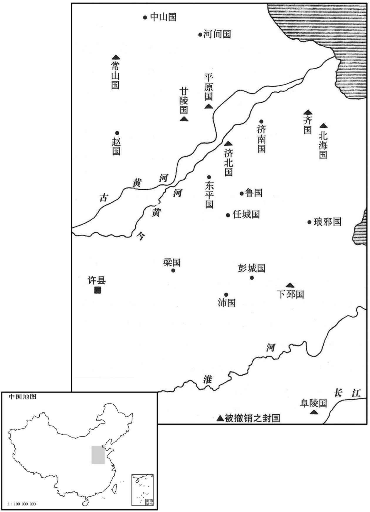
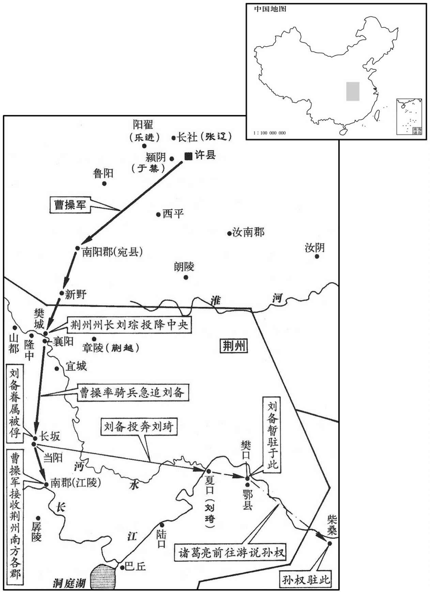
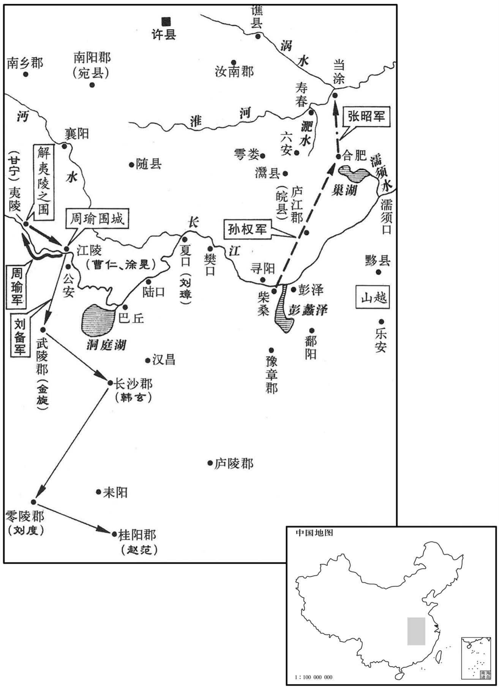
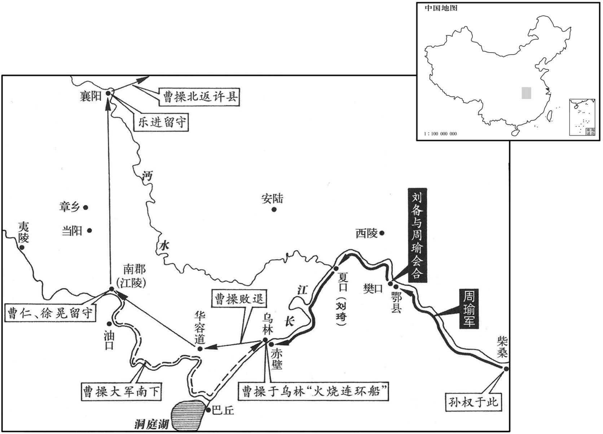
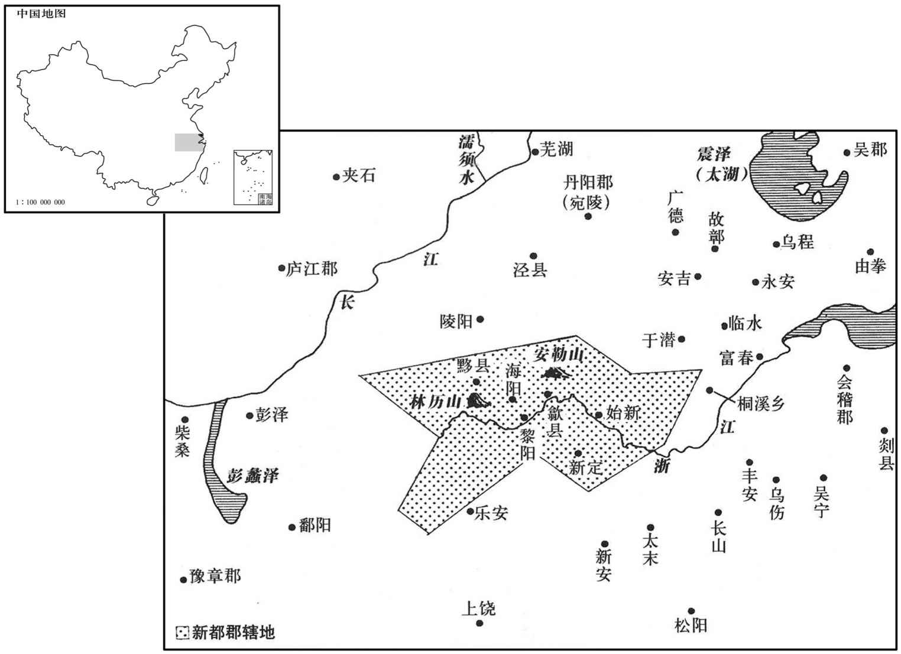

卷次与人物目录 / 卷65
资治通鉴 · 卷第六十五【汉纪五十七】
公元206年至公元208年 · 原文、白话与胡三省注
本页按胡注本编排保存全卷内容。白话采用本站所据译本，未可靠对应的内容另列说明；事件标题用于定位，并非原书文字。
本卷共71段原文，70段有译文对应，1段缺译或待核对。
卷第六十五【汉纪五十七】起柔兆淹茂（丙戌），尽着雍困敦（戊子），凡三年。
卷首原文与注释
孝献皇帝庚
公元206年 · 汉孝献皇帝建安十一年
建安十一年〔（丙戌、二○六）〕
本年事件索引（现代整理）
春，正月，有星孛于北斗。〔晋天文志：北斗七星，在太微北：一曰天枢，二曰璇，三曰玑，四曰权，五曰玉衡，六曰开阳，七曰摇光；一至四为魁，五至七为杓。孛，蒲内翻。〕
春季，正月，有异星出现在北斗星座。
曹操自将击高干，〔将，即亮翻。〕留其世子丕守邺，使别驾从事崔琰傅之。操围壶关，三月，壶关降。〔降，户江翻。〕高干自入匈奴求救，单于不受；干独与数骑亡，欲南奔荆州，〔骑，奇寄翻。欲奔刘表也。〕上洛都尉王琰捕斩之，〔上洛县，前汉属弘农，后汉属京兆。峣关在县西北，故置都尉。刘昫曰：言县在洛水之上，故以为名。〕并州悉平。
曹操亲自率军征讨并州刺史高干，留下世子曹丕镇守邺城，派别驾、从事崔琰辅佐曹丕。曹操大军包围壶关。三月，壶关投降。高于亲自去向匈奴求救，被匈奴单于拒绝。高干身边只剩几名骑兵卫士，想南逃到荆州去投奔刘表。半路上，被上洛都尉王琰捉获，斩首。并州全部平定。
曹操使陈郡梁习以别部司马领并州刺史。时荒乱之余，胡、狄雄张，〔张，知亮翻。〕吏民亡叛入其部落，〔南匈奴部茖皆在并州界。〕兵家拥众，各为寇害。〔谓诸豪右拥众自保者。〕习到官，诱喻招纳，〔诱，音酉。〕皆礼召其豪右，稍稍荐举，使诣幕府；豪右已尽，次发诸丁强以为义从；〔言其以义从军也。从，才用翻。〕又因大军出征，令诸将分请以为勇力。吏兵已去之后，稍移其家，前后送邺，凡数万口；其不从命者，兴兵致讨，斩首千数，降附者万计。单于恭顺，名王稽颡，〔名王，即匈奴诸部王也。降，户江翻。稽，音启。〕服事供职，同于编户。〔编，联次也；编于民籍，故曰编户。〕边境肃清，百姓布野，勤劝农桑，令行禁止。〔令之则行，禁之则止。〕长老称咏，以为自所闻识，刺史未有如习者。〔长，知两翻。〕习乃贡达名士避地州界者河内常林、杨俊、王象、荀纬及太原王凌之徒，操悉以为县长，〔纬，于贵翻。长，知两翻。〕后皆显名于世。
曹操派陈郡人梁习以别部司马的职务，兼任并州刺史。当时在兵荒马乱之后，匈奴等各北方胡狄各族的势力都很大，官吏及百姓往往叛逃到他们的部落中；其余许多地方势力也都拥有强大的武装力量，各霸一方。梁习到任后，用引诱和劝导的方法招纳那些地方势力，对那些首领都以礼相待，并推荐其中一些人作官，让他们到州府来任职。等这些首领都离开本乡后，就征发当地青壮年充当志愿军。梁习又借大军出征之机，把这些志愿军分送到将领们部下，至别处作战。在这些官员、兵士都离去以后，就陆续把他们的家小迁到邺城，前后送走的共有数万人。有不服从命令的，就出兵进行征讨，杀死几千人，投降的数以万计。于是，匈奴单于态度恭顺，各部落的王爷对梁习叩拜服从，承担赋税徭役，与编于民籍的百姓一样。边境隶清，农夫遍布田野，梁习鼓励农业和桑蚕业，法令得到严格执行，父老们称赞，认为记忆之中，没有一个刺史比得上梁习。梁习又向朝廷推荐来并州躲避战乱的各地名士，如河内人常林、杨俊、王象、荀纬以及太原人王凌等，曹操都任命他们为县长，以后，这些人都闻名于世。
初，山阳仲长统游学至并州，过高干，〔仲长，复姓。过，工禾翻。〕干善遇之，访以世事。统谓干曰：「君有雄志而无雄材，好士而不能择人，〔好，呼到翻。〕所以为君深戒也。」干雅自多，〔自以为多才也。〕不悦统言，统遂去之。干死，荀彧举统为尚书郎。〔百官志：尚书侍郎三十六人，四百石；一曹六人，主作文书起草。蔡质汉仪曰：尚书郎，初从三署诣台试，初上台，称守尚书郎中；岁满，称尚书郎；三年，称侍郎。〕着论曰昌言，〔孔安国曰：昌，当也。当理之言。〕其言治乱，略曰：「豪杰之当天命者，未始有天下之分者也，〔治，直吏翻。分，扶问翻。〕无天下之分，故战争者竞起焉。角智者皆穷，角力者皆负，〔角，竞也，校也。〕形不堪复伉，〔复，扶又翻；下同。伉，口浪翻，敌也。〕势不足复校，乃始羁首系颈，就我之衔绁耳。〔贤曰：衔，勒也。绁，羁也。绁，音息列翻。〕及继体之时，豪杰之心既绍，士民之志已定，贵有常家，尊在一人。当此之时，虽下愚之才居之，犹能使恩同天地，威侔鬼神，周、孔数千无所复角其圣，贲、育百万无所复奋其勇矣。〔贲，音奔。〕彼后嗣之愚主，见天下莫敢与之违，自谓若天地之不可亡也，乃奔其私嗜，骋其邪欲，君臣宣淫，〔左传，泄冶曰：「公卿宣淫，民无效焉。」杜预曰：宣，示也。〕上下同恶，荒废庶政，弃忘人物。信任亲爱者，尽佞谄容说之人也；〔说，读曰悦。〕宠贵隆丰者，尽后妃姬妾之家也。遂至熬天下之脂膏，斲生民之骨髓，怨毒无聊，祸乱并起，中国援攘，四夷侵叛，土崩瓦解，一朝而去，昔之为我哺孔之子孙者，今尽是我饮血之寇雠也。至于运徙势去，犹不觉悟者，岂非富贵生不仁，沈溺致愚疾邪！〔沈，持林翻。〕存亡以之迭代，治乱从此周复，〔左传：美、恶周必复，天之道也。〕天道常然之大数也。」
当初，山阳人仲长统游学来到并州，拜访刺史高干，高干对他待遇优厚，征求他对时局看法。仲长统对高干说：“你有雄心大志，却缺乏雄才大略；喜好贤能之士，却不能鉴别人才。在这些事上面，你要深以为戒。”高干一向自以为是，对仲长统的话很不高兴，仲长统就离开了高干。高干死后，荀推荐仲长统担任尚书郎。仲长统撰写《昌言》，分析国家的安危治乱，主要大意是：“受命于上天的英雄豪杰，并不是从开始时就有统一天下的名分，由于没有这种名分，所以竞争者纷纷崛起。但到后来，那些仗恃智谋的，智谋穷尽，仗恃力量的，力量枯竭。形势不允许再对抗，也不足以再较量，于是才被捉住头，捆住颈，置于我们控制之下。等到第二代统治者继位时，那些豪杰已不再有争夺天下的雄心，士大夫与百姓都已习惯于遵从命令，富贵之家已经固定，威权都集中于君主一人手中。在这时候，即使是一个下等的蠢才坐在皇帝的宝座上，也能使他的恩德大到与天地相同，使他的威严达到与鬼神相似的地步。即使是有几千个周公姬旦和孔夫子这样的圣人，也无法再发挥他们的圣明；有百万个孟贲和夏育之类的勇士，也无处再施展他们的勇力。那些继承天下的愚蠢帝王，见到天下没有人敢违抗旨意，就自认为政权会像天地不会灭亡，于是随意发展自己的嗜好，放纵自己的邪恶欲望，君主与臣僚都为所欲为，上下一齐作恶，荒废朝政，排斥人才。所信任亲近的，都是奸佞谄媚的小人；所庞爱提升的，都是后宫妃嫔的家族。以至达到熬尽天下民脂民膏，敲骨吸髓的程度。人民身受怨毒，痛苦不堪，灾祸战乱，同时而起。中原大地纷扰不安，四方外族相继背叛，政权土崩瓦解，毁于一旦。从前受我养护哺育的小民，如今全都成为喝我鲜血的仇敌。至于那些大势已去，还不觉悟的人，岂不是富贵产生的麻木不仁，溺爱导致的愚昧顽劣吗！政权的存亡相互交替，治理与战乱也不断周而复始地循环，这正是天地运行的规律。”
秋，七月，武威太守张猛杀雍州刺史邯郸商；〔兴平元年，分凉州河西四郡置雍州。雍，于用翻。〕州兵讨诛之。猛，奂之子也。
秋季，七月，武威太守张猛杀死雍州刺史邯郸商。州中的军认讨伐张猛，把他杀死。张猛是张奂的儿子。
八月，曹操东讨海贼管承，至淳于，〔淳于县，属北海国。贤曰：故城在今密州安丘县东北。〕遣将乐进、李典击破之，承走入海岛。
八月，曹操向东讨伐海上的盗贼管承，进军到淳于，派大将乐进、李典击败管承，管承逃到海岛上。
昌豨复叛，操遣于禁讨斩之。〔豨，许岂翻，又音希。豨降见上卷建安六年。复，扶又翻。〕
昌又背叛曹操，曹操派于禁讨伐，斩杀昌。
是岁，立故琅邪王容子熙为琅邪王，齐、北海、阜陵、下邳、常山、甘陵、济阴、平原八国皆除。〔容，光武子琅邪孝王京之云孙也。容薨，国绝，今复立其子。齐，光武兄武王演之后。北海，演少子靖王兴之后。阜陵，光武子质王延之后。下邳，明帝子惠王衍之后。常山，明帝子顷王之后。甘陵，章帝子清河孝王庆之后。济阴，明帝子悼王长薨而无子，国除久矣；据范史，当是济北，章帝子惠王寿之后，亦以是年国除。平原，和帝子怀王胜始封，薨而无子，以河间王开子翼继之；翼废为蠡吾侯子志立为桓帝，复以帝兄硕为平原王，奉翼后，至是国亦除。八国皆除，而独立熙继琅邪者，容先遣弟邈至长安贡献，操时在东郡，邈盛称其忠诚，操以此德容，故为容立后。除八国者，渐以弱汉宗室也。济，子礼翻。〕
这一年，献帝立已故琅邪王刘容的儿子刘熙为琅邪王，撤销齐、北海、阜陵、下邳、常山、甘陵、济阴、平原等八个王国。
乌桓乘天下乱，略有汉民十余万户，袁绍皆立其酋豪为单于，〔酋，慈由翻。〕以家人子为己女，妻焉。〔妻，七细翻。〕辽西乌桓蹋顿尤强，〔蹋，徒腊翻。〕为绍所厚，故尚兄弟归之，数人塞为寇，〔数，所角翻。〕欲助尚复故地。曹操将击之，凿平虏渠、泉州渠以通运。〔操纪云：凿渠，自呼沱入泒水，名平虏渠；又从泃河口，凿入潞河，名泉州渠，以通海。泒，音孤。泃，音句。贤曰：呼沱河，旧在饶阳南，至曹操因饶河故渎，决令北注新沟水，所以今在饶阳县北。说文：泒水，出鴈门葰人戍夫山，东北入海。水经注：泃水，出右北平无终县西山，西北流，过平谷县而东南流，又南流入于潞河，又东合泉州渠口，曹操所凿也。渠东至海阳县乐安亭南与濡水合，而入于海。泉州、平谷二县，皆属渔阳郡。贤曰：泉州故城，在今幽州雍奴县南。海阳县，属辽西郡。葰，相维翻。〕
乌桓人乘天下大乱，掳掠汉人十余万户。袁绍把各部落的酋长都封为单于，并以平民家的姑娘做自己的女儿，嫁给那些单于做妻子。辽西乌桓酋长蹋顿的势力尤其强盛，受到袁绍的厚待，因此袁尚兄弟去投奔蹋顿。蹋顿屡次派兵入塞抢掠，想帮助袁尚恢复旧有的疆土。曹操准备出军讨伐，开凿平虏渠、泉州渠，以便运输大军所需的粮草。
孙权击山贼麻、保二屯，平之。〔水经注：江水过陆口而东，左得麻屯口，南直蒲圻洲，水北入百有余里，吴所屯也。〕
孙权攻击山贼盘据的麻屯和保屯，完全平定。

公元207年 · 汉孝献皇帝建安十二年
十二年〔（丁亥、二○七）〕
本年事件索引（现代整理）
春，二月，曹操自淳于还邺。丁酉，操奏封大功臣二十余人，皆为列侯；因表万岁亭侯荀彧功状，〔九域志：郑州有万岁亭，彧所封也。〕三月，增封彧千户。又欲授以三公，彧使荀攸深自陈让，至于十数，乃止。
春季，二月，曹操从淳于返回邺城。丁酉（初五），曹操上奏献帝并得到批准，封大功臣二十余人，都为列侯。又上表称赞万岁亭侯荀的功劳。三月，为表彰荀，在他原来侯国封户的基础上，又增加一千户。还准备任命荀为三公，荀派荀攸恳切地表达自己的辞让之意，先后达到十余次，曹操才同意。
曹操将击乌桓。诸将皆曰：「袁尚亡虏耳，夷狄贪而无亲，岂能为尚用。今深入征之，刘备必说刘表以袭许，〔说，输芮翻。〕万一为变，事不可悔。」郭嘉曰：「公虽威震天下，故恃其远，必不设备，因其无备，卒破〔【章：甲十二行本「破」作「然」；乙十一行本同；孔本同；张校同。】〕击之，可破灭也。〔卒，读曰猝。〕且袁绍有恩于民夷，而尚兄弟生存。今四州之民，徒以威附，德施未加，〔施，式豉翻。〕舍而南征，〔舍，读曰舍。〕尚因乌桓之资，招其死主之臣，〔言欲为其主致死，而留滞不得逞者。〕胡人一动，民夷俱应，以生蹋顿之心，成觊觎之计，〔觊，音冀。觎，音俞。〕恐青、冀非己之有也。表坐谈客耳，自知才不足以御备，重任之则恐不能制，轻任之则备不为用，虽虚国远征，公无忧矣。」操从之。行至易，〔易县，前汉属涿郡，后汉省。宋白曰：汉易县故城，在今涿州归义县东南十五里，大易故城是。〕郭嘉曰：「兵贵神速。今千里袭人，辎重多，难以趋利，〔重，直用翻；下同。趋，七喻翻。〕且彼闻之，必为备；不如留辎重，轻兵兼道以出，掩其不意。」
曹操准备出兵征讨乌桓，将领们都说：“袁尚只不过是个逃亡罪犯，乌桓人贪得无厌而不念旧情，岂能受袁尚利用。如今大军深入塞外征乌桓，刘备必然劝说刘表乘虚袭击许都，万一发生变化，事情就后悔不及了。”郭嘉说：“您虽然威震天下，但乌桓人倚仗距离遥远，一定不会预先防备，乘其不备，突然袭击，可以一战告捷。况且，袁绍对这一地区的百姓以及塞外的异族有恩德，而袁尚兄弟现在还活在世上。如今冀、青、幽、并四州的百姓，只是因畏惧而服从我们，并没有受过我们的恩德。如果我们离开这里而率军南征，袁尚利用乌桓的武力作资本，招集愿为恩主效死的部属，乌桓人一动，四州的百姓及异族都会纷纷响应，这会使蹋顿动心，生出非分的打算，恐怕青州与冀州就不会再在您的控制下了。刘表不过是个只会坐在那里发议论的人，他自知才干不能驾御住刘备，重用刘备则害怕控制不住，轻用则刘备不会为他所用。因此，即使我们调走全国兵力远征，您也不必担扰。”曹操听从了郭嘉的意见。大军进发到易县，郭嘉提议说：“兵贵神速，如今远涉千里进行奇袭，辎重太多，难以掌握先机。而且假如乌桓人得到消息，必然加强戒备；不如留下辎重，军队轻装以加倍的速度急进，出其不意地进攻。”
初，袁绍数遣使召田畴于无终，〔畴保无终，见六十卷初元四年。数，所角翻。〕又即授将军印，使安辑，所统，畴皆拒之。及曹操定冀州，河间邢颙谓畴曰：「黄巾起来，二十余年，海内鼎沸，百姓流离。今闻曹公法令严。民厌乱矣，乱极则平，请以身先。」遂装还乡里。〔颙，鲁容翻。颙从畴游，积五年乃归。先，悉荐翻。〕畴曰：「邢颙，天民之先觉者也。」〔伊尹曰：予，天民之先觉者也。此以道自任者也。若邢颙之先觉，特见几耳。〕操以颙为冀州从事。畴忿乌桓多杀其本郡冠盖，〔谓郡中名胜之士。〕意欲讨之而力未能。操遣使辟畴，畴戒其门下趣治严。〔趣，读曰促。严即装也。自东都避明帝讳，改装曰严，后遂因之。〕门人曰：「昔袁金慕君，礼命五至，君义不屈；今曹公使一来而君若恐弗及者，何也﹖」〔使，疏吏翻；下同。〕畴笑曰：「此非君所识也。」遂随仗者到军，拜为蓨令，〔蓨县，前汉属信都，后汉属勃海。师古曰：蓨，音条。〕随军次无终。
起初，袁绍几次派使者到无终县去召田畴，又派人授予田畴将军的印信，让田畴召抚所统部众，田畴都拒绝了。到曹操平定冀州后，河间人邢对田畴说：“黄巾军起事以来，已二十多年，天下动荡不定，百姓流离失所。如今，听说曹公法令严明，百姓对战乱已经厌恶，乱到极点，就会归于平静，请让我先去试探一下。”于是，邢收拾行装，返回家乡。田畴说：“邢是个先知先觉的人。”曹操委任邢为冀州从事。田畴忿恨乌桓人经常杀害本郡著名的士大夫，想讨伐乌桓而力量不够。曹操派使者来征召田畴，田畴要他的部属赶快为他治理行装，部属说：“以前，袁绍仰慕您的名声，曾五次礼聘，您一直拒绝；如今，曹操的使者一来，您就好像迫不及待，这是什么原因？”田畴笑着说：“这就不是你们所能知道的了。”他随同使者一起到曹操军中，被任命为令，随大军进驻无终县。
时方夏水雨，而滨海洿下，〔洿，汪胡翻。〕泞滞不通，虏亦遮守蹊要，〔蹊，径路也；蹊要，径路要处也。泞，乃定翻。〕军不得进。操患之，以问田畴。畴曰：「此道，秋夏每常有水，浅不通车马，深不载舟船，为难久矣。旧北平郡治在平冈，道出庐龙，达于柳城；〔前汉右北平郡治平冈县，后汉省平冈县，改治土垠县。垠，音银。贤曰：土垠故城，在今平州西南。水经注曰：自无终东出庐龙塞，又东越青陉至凡城二百许里。自凡城东北出，趣平冈，可百八十里，血黄龙则五百里。故田畴引军出庐龙塞，堑山堙谷，百百余里，径白檀，历平冈，登白狼山，望柳城也。〕自建武以来，陷坏断绝，垂二百载，〔载，子亥翻。〕而尚有微径可从。今虏将以大军当由无终，不得进而退，懈弛无备。若嘿回军，从庐龙口越白檀之险，出空虚之地，路近而便，掩其不备，蹋顿可不战而禽也。」操曰：「善！」乃引军还，而署大木表于水侧路傍曰：「方今夏暑，道路不通，且俟秋冬，乃复进军。」〔复，扶又翻。〕虏候骑见之，诚以为大军去也。〔骑，奇寄翻。〕
当时正赶上夏季，大雨不止，沿海一带泥泞难行，而且乌桓人还在交通要道派兵把守，曹军受阻无法前进。曹操十分忧虑，向田畴询问对策。田畴说：“这条道路每逢夏秋两季常常积水，浅不能通车马，深不能载舟船，是长期不能解决的难题。原来右北平郡府设在平冈，道路通过卢龙塞，到达柳城。自从光武帝建武以来，道路陷坏，无人行走，已将近二百年，但仍留有道路的残迹可循。现在乌桓人以为无终是我们大军的必经之路，大军不能前进，只好撤退，因此他们放松以了戒备。如果我们默默地回军，却从卢龙塞口越过白檀险阻，进到他们没有设防的区域，路近而行动方便，攻其不备，可以不战而捉住蹋顿。”曹操说：“很好！”于是率军从无终撤退，在水边的路旁留下一块大木牌，上面写着：“现在夏季暑热，道路不通，且等到秋冬，再出兵讨伐。”乌桓人的侦察骑兵看到后，当真以为曹军已经离去。
操令畴将其众为乡导，〔将，即亮翻。乡，读曰向。〕上徐无山，〔史记正义：徐无山，在右北平徐无县西北。徐无山，即田畴所保聚处。〕堑山堙谷，五百余里，经白檀，历平冈，涉鲜卑庭，〔白檀县，属右北平郡。宋白曰：白檀故城，在檀州燕乐县界。此时鲜卑庭已在右北平郡界，盖慕容廆之先也。堑，七艳翻。〕东指柳城。未至二百里，虏乃知之。尚、熙与蹋顿及辽西单于楼班、〔楼班，丘力居之子也。〕右北平单于能臣抵之等〔左北平石城县西。乌丸传：逆战于凡城，则白狼山盖在凡城。〕卒与虏遇，〔卒，读曰猝。〕众甚盛。操车重在后，〔车重，即辎重。重，直用翻。〕被甲者少，左右皆惧。〔被，皮义翻。少，诗沼翻。〕操登高，望虏阵不整，乃纵兵击之，吏张辽为前锋，虏众大崩，斩蹋顿及名王已下，胡、汉降者二余万口。〔降，户江翻。〕
曹操命令田畴率领他的部众作向导，上徐无山，凿山填谷，行进五百余里，经过白檀、平冈，又穿过鲜卑部落的王庭，向东直指柳城。距离二百余里时，乌桓人才知道。袁尚、袁熙与蹋顿以及辽西单于楼班、右北平单于能臣抵之等率领数万名骑兵迎击曹军。八月，曹操登上白狼山，突然与乌桓军相遇，而乌桓军军力强盛。曹军车辆辎重都在后边，身披铠甲的将士很少，曹操左右的人都感到畏惧。曹操登高，看到乌桓军队不整，就纵兵攻击，派张辽为先锋，乌桓军队大乱，斩杀蹋顿和各部落王爷及以下的乌桓首领，投降的胡人与汉人共有二十余万。

辽东单于速仆丸〔速仆丸，即苏仆延，语有轻重耳。〕与尚、熙奔辽东太守公孙康，其众尚有数千骑。彧劝操遂击之，操曰：「吾方使康斩送尚、熙首，不烦兵矣。」九月，操引兵自柳城还。公孙康欲取尚、熙以为功，乃先置精勇于貛中，然后请尚、熙入，未及坐，康叱伏兵禽之，遂斩尚、熙，井速仆丸首送之。诸将或问操：「公还而康斩尚、熙，何也﹖」操曰：「彼素畏尚、熙，吾急之则并力，缓之则自相图，其势然也。」操枭尚首，〔枭，古尧翻。〕令三军：「敢有哭之者斩！」牵招独设祭悲哭，〔牵招先为袁氏从事，故祭哭之。〕操义之，举为茂才。
辽东单于速仆丸与袁尚、袁熙投奔辽东郡太守公孙康，跟随他们的还有数千名骑兵。有人劝曹操乘势追击，曹操说：“我将使公孙康送来袁尚、袁熙的人头，不必再劳师动众。”九月，曹操率大军从柳城班师。公孙康想要杀死袁尚、袁熙，作为对朝廷立下的功劳，于是先埋伏精兵在马厩中，然后请袁尚、袁熙进来，他们还没来得及入座，公孙康叫出伏兵，把他们捉住。于是斩杀袁尚、袁熙，连同速仆丸的人头一起送给曹操。将领中有人问曹操：“您已退军而公孙康杀死袁尚、袁熙，这是为什么？”曹操说：“公孙康一向畏惧袁尚、袁熙，我如果急攻，他们就会合力抵抗；缓和时，他们就会自相残杀；是形势使他们这样做的。”曹操把袁尚的头颅悬挂起来示众，号令三军：“有敢于哭泣的，处斩！”牵招却独自设祭，放声悲哭，曹操认为他是忠于故主的义士，推荐他为茂才。
时天寒且旱，二百里无水，军又乏食，杀马数千匹以为粮，凿地入三十余丈方得水。既还，科问前谏者，〔科，条也。问前谏者，科具其姓名也。〕众莫知其故，人人皆惧。操皆厚赏之，曰：「孤前行，乘危以徼幸，〔徼，坚尧翻。〕虽得之，天所佐也，顾不可以为常。诸君之谏，万安之计，是以相赏，后勿难言之。」
当时天寒，又遇上大旱，二百里没有水，军队缺乏粮食，只好杀死几千匹战马作为军粮，挖地三十余丈才见到水。大军返回后，曹操调查以前劝阻他出兵征讨乌桓的人，众人不知道是因为什么，都心怀畏惧。曹操对劝阻者都加以厚赏，对他们说：“我先前出兵，实在危险，虽然侥幸获胜，全是靠上天保佑，不能作为常规。你们的意见，才是万全之计，所以加以赏赐，以后不要害怕提相反的意见。”
冬，十月，辛卯，有星孛于鹑尾。〔蔡邕曰：自张十二度至轸六度，谓之鹑尾之次。陈卓曰：自张十七度至轸十一度，谓之鹑尾；于辰在巳。〕
冬季，十月，辛卯（初三），有异星出现在鹑尾星次。
乙巳，黄巾杀济南王赟。〔贤曰：赟，河间孝王开五代孙。灵帝立其父康为济南王，以奉孝仁皇祀。济，子礼翻。赟，于伦翻。〕
乙巳（十七日），黄巾军杀死济南王刘。
师还，论功行赏，〔还，从宣翻，又如字。〕以五百户封田畴为亭侯。畴曰：「吾始为刘公报仇，率众遁逃，〔事见六十卷初平四年。为，于伪翻。〕志义不立，反以为利，非本志也。」固让不受。操知其至心，许而不夺。〔不夺其志也。孔子曰：匹夫不可夺志。〕
大军回到邺城，论功行赏，封田畴为亭侯，封地有五百户。田畴说：“我当初是为刘虞报仇，率众逃亡，我的志愿没有达到，反而以此获利，这不是我的本意。”坚决辞让，不肯接受封爵。曹操知道田畴是出于真心，同意他的辞让，没有勉强他接受。
操之北伐也，刘备说刘表袭许，〔说，输芮翻。〕表不能用。及闻操还，表谓备曰：「不用君言，故为失此大会。」〔犹言大机会也。〕备曰：「今天下分裂，日寻干戈，事会之来，岂有终极乎！若能应之于后者，则此未足为恨也。」〔豪桀之言，故自与常人不同。〕
曹操出兵北伐乌桓时，刘备劝刘表发兵袭击许都，刘表不能用他的计策。等听到曹操得胜班师的消息，刘表对刘备说：“没有听你的话，结果失掉这个大好机会。”刘备说：“如今天下分裂，战争不断，机会的到来，难道会有终极吗？要是能不放过以后的机会，则这次也不足以遗憾。”

是岁，孙权西击黄祖，虏其人民而还。
这一年，孙权向西攻击黄祖，俘虏百姓后返回吴郡。
权母吴氏疾笃，引见长昭等，属以后事而卒。〔属，之欲翻。卒，子恤翻。〕
孙权的母亲吴夫人病危，召见张昭等人，嘱托后事之后去世。
初，琅邪诸葛亮寓居让阳降中，〔亮从父玄，为豫章太守，将亮之官。会汉朝以朱皓代玄，玄与亮往依刘表。汉晋春秋曰：亮家于南阳之邓县，在襄阳城西二十里，号曰隆中。按东坡诗万山西北古隆中也。故其万山诗云：「回头望西北，隐隐龟背起；传云古隆中，万树桑柘美。」〕每自比管仲、乐毅；时人莫之许也，惟颍川徐庶与崔州平谓为信然。州平，烈之子也。〔崔烈事灵帝，以入钱为公。〕
起初，琅邪人诸葛亮寄居襄阳隆中，经常把自己比作管仲和乐毅；但当时人并不认可，只有颍川人徐庶与崔州平认为确是如此。崔州平是崔烈的儿子。
本段人物：乐毅
刘备在荆州，访士于襄阳司马徽。徽曰：「儒生俗士，岂识时务，识时务者在乎俊杰。此间自有伏龙、凤雏。」备问为谁，曰：「诸葛孔明、庞士元也。」〔诸葛亮，字孔明。庞统，字士元。庞，皮江翻。〕徐庶见备于新野，备器之。〔物之有用者谓之器：器之者，器重之也；重其才之足以用世也。〕庶谓备曰：「诸葛孔明，卧龙也，将军岂愿见之乎﹖」备曰：「君与俱来。」庶曰：「此人可就见，不可屈致也，将军宜枉驾顾之。」
刘备在荆州，向襄阳人司马徽询访人才。司马徽说：“一般的儒生与俗士，怎么能认清时务，能认清时务的，只有俊杰之士。在襄阳这里，自有伏龙与凤雏。”刘备问是谁，司马徽说：“就是诸葛亮与庞统。”徐庶在新野县见到刘备，刘备对徐庶很器重。徐庶对刘备说：“诸葛亮乃是卧龙，将军愿见他吗？”刘备说：“请你与他一起来。”徐庶说：“这个人，你可以去见他，不可以召唤他来，将军应当屈驾去拜访他。”
备由是诣亮，〔备以枭雄之才，闻徐庶一言，三枉驾以见孔明，此必庶之材器有以取重于备，备遂信之也。庶自辞备归操之后，寂无所闻，今观其舍旧从新之言，质天地而无愧，则其人从可知矣。〕凡三往，乃见。因屏人曰：「汉室倾颓，奸臣窃命，孤不度德量力，欲信大义于天下，〔屏，必郢翻。度，徒洛翻。量，音良。信，读曰申。〕而智术浅短，遂用猖蹶，〔猖，披猖。蹶，颠蹶。〕至于今日。然志犹未已，君谓计将安出﹖」亮曰：「今曹操已拥百万之众，挟天子而令诸侯，此诚不可与争锋。孙权据有江东，已历三世，国险而民附，贤能为之用，此可与为援而不可图也。荆州北据汉、沔，利尽南海，〔谓自桂阳、苍梧跨有交州，则利尽南海也。〕东连吴会，〔吴会者，言吴为东南一都会也。〕西通巴、蜀，此用武之国，而其主不能守，此殆天所以资将军也。益州险塞，沃野千里，天府之土；刘璋闇弱，张鲁在北，民殷国富而不知存恤，智能之士思得明君。〔张松、法正之徒虽未与亮交际，亮固逆知之矣。〕将军既帝室之冑，〔冑，裔也。〕信义着于四海，若跨有荆、益，保其岩阻，抚和戎、越，结好孙权，〔好，呼到翻；下同。〕内修政治，外观时变，则霸业可成，汉室可兴矣。」〔所谓俊杰者，量时审势规画定于胸中，傥非其人，未易与之言也。治，直吏翻。〕备曰：「善！」于是与亮情好曰密。〔好，呼到翻。〕关羽、张飞不悦，备解之曰：「孤之有孔明，犹鱼之有水也。〔鱼有水则生，无水则死。〕愿诸君勿复言。」〔复，扶又翻。〕羽、飞乃止。
刘备于是拜访诸葛亮，一共去了三次，才见到诸葛亮。于是，刘备让左右的人都出去，说道：“汉朝王室已经衰败，奸臣窃据朝政大权，我不度德量力，打算伸张正义于天下，但智谋短浅，以致于遭受挫折，到了今天这个地步。但我的雄心壮志仍然未息，你认为应当如何去作？”诸葛亮说：“如今，曹操已经拥有百万大军，挟持天子以号令天下，此人确实不可与他争锋。孙权占据江东，已经历三代，地势险要，民心归附，贤能人才都为他尽力，此人可以与他联盟，却不可算计他。荆州地区，北方以汉水、沔水为屏障，南方直通南海，东边连接吴郡、会稽，西边可通巴郡、蜀郡，正是用武之地，但主人刘表却不能守，这恐怕是上天赐给将军的资本。益州四边地势险阻，中有沃野千里，是天府之地，而益州牧刘璋昏庸儒弱，北边还有张鲁相邻，虽然百姓富庶，官府财力充足，却不知道珍惜，智士贤才都希望有一个圣明的君主。将军既是汉朝王室的后裔，信义闻名天下，如果能占有荆州与益州，据守险要，安抚戎、越等族，与孙权结盟，对内修明政治，对外观察时局变化，这样，就能建成霸业，复兴汉朝王室了。”刘备说：“很好！”从此与诸葛亮的情谊日益亲密。关羽、张飞对此感到不满，刘备对他们解释说：“我得到诸葛亮，是如鱼得水，希望你们不要再说了。”关羽、张飞才停止抱怨。
司马徽清雅有知人之鉴。同县庞德公素有重名，徽兄事之。诸葛亮每至德公家，独拜下，德公初不令止。〔观孔明独拜德公于下，孔明所以事德公者为何如邪！德公初不令止，德公所以自居者为何如邪！德公于是不可及矣。〕德公从子统，少时朴钝，未有识者，〔从，才用翻。少，诗照翻。〕惟德公与徽重之。德公尝谓孔明为卧龙，士元为凤雏，德操为水鉴；故德操与刘备语而称之。〔司马徽，字德操。〕
司马徽为人高雅，善于鉴别人才。与他同县的庞德公一向名望很高，司马徽把他当作兄长那样对待。诸葛亮每次到庞德公家里，都在床下向庞德公独拜。庞德公起初也不阻止。庞德公的侄子庞统，从小朴实，沉默寡言，大家都没有看到他的才能，只有庞德公与司马徽重视他。庞德公曾经说诸葛亮是“卧龙”，庞统是“凤雏”，司马徽是“水镜”。所以，当司马徽与刘备谈话时，向刘备称赞诸葛亮与庞统。
译本中未与胡注本可靠对应的内容
以下另列供核对版本差异，不并入胡注本正文。
译本所附古文
[5]十一月，曹操至易水，乌桓单于代郡普富卢、上郡那楼皆来贺。
译本白话
十一月，曹操到达易水，乌桓代郡部落单于普富卢、上郡部落单于那楼都来向曹操祝贺。
公元208年 · 汉孝献皇帝建安十三年
十三年〔（戊子、二○八）〕
上传原文的注释括号有异常，字符原样保留；无法可靠划分的段落默认全文显示。
本年事件索引（现代整理）
- 曹操因赵温辟用曹丕，弹劾赵温选举不实
- 曹操修建玄武池训练水军
- 甘宁离开刘表、黄祖，投奔孙权
- 甘宁劝孙权先取江夏、击破黄祖，再图荆益
- 孙权大破黄祖，攻克江夏并斩杀黄祖
- 甘宁为旧主苏飞求情，孙权赦免苏飞
- 朝廷恢复丞相、御史大夫官制，任命曹操为丞相
- 崔琰、毛玠主持选举，崇尚廉洁、抑制阿党
- 曹操征召司马懿，司马懿惧而就职
- 张辽识破长社军中谋反，迅速平定叛乱
- 张既说服马腾交还部曲入朝，马超留守其军
- 曹操南征刘表
- 郗虑任御史大夫
- 孔融因讥议曹操及谋反等罪名被处死
- 许下众人不敢收葬孔融，友人脂习冒险抚尸
- 刘表病重，蔡瑁等阻止刘琦探视并拥立刘琮
- 蒯越、傅巽劝刘琮归降曹操，荆州随之投降
- 刘备闻刘琮已降，拒绝偷袭荆州后率众南撤
- 习凿齿称赞刘备颠沛中仍守信义、以人为本
- 刘琮部将王威劝其趁曹操无备袭击，刘琮不纳
- 曹操轻骑追击刘备于长坂，刘备弃家眷逃走
- 徐庶因母亲被曹操俘获，辞别刘备北归
- 张飞据水断桥，喝退曹操追兵
- 赵云救出刘备之子刘禅，与关羽会合脱险
- 曹操厚待刘琮及荆州降臣，任用蒯越等人
- 文聘拒绝随刘琮投降，向曹操陈明守土之志
- 和洽等荆州名士离开刘表，归附曹操
- 日食
- 鲁肃劝孙权趁刘表新丧联合刘备，共抗曹操
- 鲁肃在当阳会见刘备，促成孙刘联盟
- 诸葛亮出使柴桑，劝孙权联刘抗曹
- 张昭等主张迎降，鲁肃独劝孙权勿失江东
- 周瑜回吴劝孙权决战，孙权拔刀斩案拒降
- 周瑜分析曹军疲弱、水战不习，坚定孙权抗曹之心
- 刘备与周瑜会面，确认联军共同迎击曹操
- 曹操与孙刘联军相遇赤壁
- 黄盖诈降火攻，孙刘联军大破曹操水军
- 周瑜、程普救援甘宁，击败曹仁于夷陵
- 刘备收取荆南四郡，任诸葛亮督办三郡赋税
- 刘璋遣张松出使曹操，张松受冷遇后劝刘璋结交刘备
- 习凿齿评论曹操骄矜失势，天下由此三分
- 曹操坚持封赏田畴，田畴终以死相辞
- 曹操欲与幼子曹冲合葬，邴原以礼制劝止
- 贺齐平定黟、歙山越，孙权设置新都郡
春，正月，司徒赵温辟曹操子丕。操表「温辟臣子弟，选举故不以实」；策色之。〔操以温辟其子，怒而免之，驾言选举不以实耳！考异曰：献帝起居注在十五年，范书帝纪在十三年。按是年罢三公官，温不至十五年也〕。
春季，正月，司徒赵温延聘曹操的儿子曹丕为僚属。曹操上表说：“赵温召聘我的子弟为僚属，说明他并不依据真才实学选拔人才。”献帝颁策将赵温免职。
曹操还邺，作玄武池以肄舟师。〔邺城有玄武苑，操凿池其中。肄，以四翻，习也。〕
曹操回到邺城，修建玄武池，用以训练水军。
初，巴郡甘宁将僮客八百人归刘表，〔宁走荆州事见六十一卷兴平元年。〕表儒人，不习军事，宁观表事势终必无成，恐一朝众散，并受其祸，〔聚而不用，其祸必至。〕欲东入吴。黄祖在夏口，〔应劭曰：沔水自江夏别至南郡华容为夏水，过江夏郡而入于江。盖指夏水入江之地为夏口。庾仲雍曰：夏口，一曰沔口，或曰鲁。水经注曰：沔水南至江夏沙羡县北，南入于江。然则曰夏口，以夏水得名；曰沔口，以沔水得名，曰鲁口，以鲁山得名；实一处也。其地在江北。自孙权置夏口督。屯江南，今鄂州治是也。故何尚之云：夏口在荆江之中，正对沔口。贤注亦谓夏口戍在今鄂州。于是相承以鄂州为夏口，而江北之夏口晦矣。〕军不得过，乃留，依祖三年，祖以凡人畜之。〔畜，许六翻，养也。〕孙权击祖，祖军败走，权校尉凌操将兵急追之。〔姓谱：卫康叔支子，为周凌人，子孙以为氏。〕宁善射，将兵在后，射杀操，〔射杀之射，而亦翻。〕祖由是得免。军罢，还营，待宁如初。祖都督苏飞数荐宁，〔数，所角翻。〕祖不用；宁欲去，死不免；飞乃白祖，以宁为邾长。〔邾县，属江夏郡。地道记曰：楚灭邾，徙其君于此。贤曰：邾故城在今复州竟陵县东。飞盖开其奔吴之路也。长，知两翻。宋白曰：黄州，汉邾县也。〕宁遂亡奔孙权，〔考异曰：吴志孙权传，建安八年、十二年，皆尝讨黄祖。凌统传，父操死时，统年十五，摄父兵。后击麻保屯，刺杀陈勤。按周瑜、孙瑜传，以十一年击麻保屯，则操死似在八年，然后五年宁乃奔权，似晚。今无年月可据，追言之。〕周瑜、吕蒙共荐达之，权礼异，同于旧臣。
起初，巴郡人甘宁率领奴朴和宾客八百人投奔刘表。刘表是个儒者，不懂军事，甘宁看出刘表终究难以成就大业，恐怕一朝众叛亲离，自己也要受牵连，就打算东入吴郡。但刘表的部将黄祖据下待了三年，黄祖一直把他当作凡人来对待。孙权攻击黄祖，黄祖军队大败而逃，孙权部下的校尉凌操领兵急速追赶。甘宁善于射箭，率兵在后掩护，射死凌操，黄祖因此免于一死。黄祖收军，回营后，对待甘宁还像过去一样。黄祖部下的都督苏飞屡次推荐甘宁，黄祖仍不加以重用。甘宁打算离开，但又怕边防戎备森严，难于脱身。苏飞就向黄祖推荐甘宁担任邾县县长。甘宁于是逃亡，投奔孙权。周瑜、吕蒙共同向孙权推荐甘宁，孙权对甘宁礼遇特别优厚，与跟随自己多年的旧臣一样。
宁献策于权曰：「今汉祚日微，曹操终为篡盗。南荆之地，山川形便，诚国之西势也。〔谓在吴之西，据上流之形势。〕宁观刘表，虑既不远，儿子又劣，〔言又弱于表也。〕非能承业传基者也。至尊当早图之，不可后操。〔言若不先图刘表，必为操所图也。后，户遘翻。〕图之之计，宜先取黄祖。祖今昏耄已甚，财谷并乏，左右贪纵，吏士必怨，舟船战具，顿废不修，〔顿，坏也。左传：甲兵不顿。顿，读曰钝。〕感于耕农，军无法伍，至尊今往，其破可必。一破祖军，鼓行而西，据楚关，〔楚关，扞关也。蜀伐楚，楚为扞关以拒之，故曰楚关。〕大势弥广，即可渐规巴、蜀矣。」权深纳之。张昭时在坐，难曰：「今吴下业业，〔坐，徂卧翻。难，乃旦翻。业业，危惧之意。〕若军果行，恐必致乱。」宁谓昭曰：「国家以萧何之任付君，君居守而忧乱，奚以希慕古人乎！」〔言固有攸当者，张昭不得以强辞距也。守，式又翻。〕权举酒属宁曰：「兴霸，〔甘宁，字兴霸。属，之欲翻。〕今年行讨，如此酒矣，决以付卿。卿但当勉建方略，令必克祖，则卿之功，何嫌张长吏之言乎！」〔昭为权长史。权之此言，既以奖甘宁之气，又以全张昭之体。不有居者，谁守社稷；不有行者，谁扞牧圉。长，知两翻。〕
甘宁向孙权献计说：“如今，汉朝王室日见衰弱，曹操终究会篡夺江山。荆州南部，山川险要，在我们的西边，控制着长江上游。据我观察，刘表既没有深谋远虑，他的儿子又更加拙劣，不是能继承基业的人。您应当尽早采取行动，不能落在曹操后面。夺取荆州的策略，是应该先进攻黄祖。黄祖现在已经十分老迈昏愦，钱财与粮草都很缺乏，左右亲信都贪赃枉法，官吏与兵士都心怀怨恨，战船武器废坏，无人修整，农业荒废，军无法纪。如果您现在出兵征讨，一定可攻破黄祖。攻破黄祖后，大张旗鼓地向西占据楚关，则势力大增，就可以逐步规划夺取巴、蜀地区了。”孙权很以为然。张昭当时也在座，提出疑问说：“现在吴郡民心不稳，大军如果出征，恐怕会发生变乱。”甘宁对张昭说：“国家把萧何那样的重任托付给您，您留守后方，却担心发生变化，怎么能效法古代名臣呢！”孙权举杯向甘宁敬酒，说：“甘兴霸，今年进行讨伐，就像这杯酒，已决定交付给你。你只管努力去制定策略，使得一定能攻破黄祖，就是你的大功，何必在乎张长史的话呢！”
本段人物：萧何
权遂西击黄祖。祖横两蒙冲〔释名曰：船狭而长曰蒙冲，以冲突敌船。〕挟守沔口，以栟闾大绁系石为觧，〔栟闾，鈩榈也。郭璞曰：落获也，�之@器索。栟，卑盈翻。绁，音薛，长绳也。觧，丁定翻，锤舟石。〕上有千人，以弩交射，飞矢雨下，军不得前。偏将军董袭与别部司马凌统俱为前部，各将敢死百人，人被两铠，乘大舸，〔将，即亮翻。被，皮义翻。方言，南楚江、湘，凡船大者谓之舸，小者谓之艖。舸，嘉我翻。〕突入蒙冲里。袭身以刀断两绁，〔断，丁管翻。〕蒙冲乃横流，大兵遂进。祖令都督陈就以水军逆战。平北都尉吕蒙〔蒙自别部司马，以功为平北都尉。〕勒前锋，亲枭就首。〔枭，坚尧翻。〕于是将士乘胜，水陵并进，傅其城，〔傅，读曰附。〕尽锐攻之，遂屠其城。祖挺身走，追斩之，〔挺，拔也。〕虏其男女数万口。
于是孙权西征黄祖。黄祖用两艘以生牛皮包裹的狭长的蒙冲战船封锁沔口，用粗大的棕绳捆住巨石，作为碇石，固定船身。船上有一千人，用弓弩向外轮流发射，箭如雨下，孙权军队无法上前。偏将军董袭与别部司马凌统都是孙权的先锋，各率敢死队一百人，每人身披两副铠甲，乘大船，闯入黄祖的蒙冲战船之间。董袭抽刀砍断两根棕绳，蒙冲战船模漂在水上，孙权大军才得以前进。黄祖命令都督陈就率水军迎战。孙权部将平北都尉吕蒙统率前锋，亲手斩下陈就的人头，悬挂示众。于是吴军将士乘胜猛追，水陆并进，逼近夏口城，出动全部精锐部队猛攻，攻陷后大肆屠杀。黄祖突围而逃，被追上杀死。吴军俘虏了数万男女。
权先作两函，欲以盛祖及苏飞首。〔盛，时征翻。〕权为诸将置酒，甘宁下席叩头，血涕交流，为权言：「飞畴昔旧恩，〔旧恩，谓荐而不用，又开之使奔吴也。为，于伪翻；下同。〕宁不值飞，固已捐骸于沟壑，不得致命于麾下。今飞罪当夷戮，特从将军乞其首领。」权感其言，谓曰：「今为君置之。若走去何﹖」宁曰：「飞免分裂之祸，受更生之恩，逐之尚心不走，岂当图亡哉！〔亡，谓亡走。〕若尔，〔尔，犹言如此也。〕宁头当代入函。」权乃赦之。凌统怨宁杀其父操，常欲杀宁；权命统不得雠之，令宁将兵屯于他所。
孙权预先制作了两个木盒，打算装黄祖与苏飞的人头。得胜后，孙权为诸将领摆宴庆功，甘宁走下坐位，向孙权叩头流血，鲜血与眼泪一齐往下流，对孙权进述苏飞从前对待自己的恩德，说：“我甘宁如果没有遇到苏飞，肯定已死在沟壑，而不能在您部下效力了。如今，苏飞的罪本该处死，我特地请求将军饶他一命。”孙权为甘宁的话所感动，说：“现在就为你放了他，如果他逃跑怎么办？”甘宁说：“苏飞能免除斩首之祸，受到您再生的大恩，赶他都不会走，怎么会打算逃跑呢！如果他这样做，我甘宁的人头将代替他放入木盒。”孙权于是不令赦免苏飞。凌统怨恨甘宁杀死他的父亲凌操，经常打算杀死甘宁。孙权命令凌统不得仇恨甘宁，并让甘宁领兵到别的地方驻守。
夏，六月，罢三公官，复置丞相、御史大夫。〔汉初，以丞相、御史大夫、太尉为三公，哀帝二寿二年，以大司马、大司徒、大司空为三公，中兴以来，以太尉、司徒、司空为三公。今虽复置丞相、御史，而操自为丞相，事权出于一矣。〕癸巳，以曹操为丞相。操以冀州别驾从事崔琰为丞相西曹掾，司空东曹掾陈留毛玠为丞相东曹掾，元城令河内司马朗为主簿，弟懿为文学掾，冀州主簿卢毓为法曹议令史。〔别驾从事，州牧行部，则奉引，录众事。汉制，公府西曹掾主府史署用，东曹掾主二千石、长吏迁除及军吏，黄阁主簿录省众事。文学掾，汉郡曹有之，操于公府创置也。法曹主邮驿科程事。时公府诸曹，皆置议令史。元城县，属魏郡〕毓，植之子也。
夏季，六月，朝廷撤除三公的职位，重新设置丞相、御史大夫。癸巳（初九），任命曹操为丞相。曹操委任冀州别驾、从事崔琰为丞相西曹掾，司空东曹掾陈留人毛为丞相东曹掾，元城县县令河内人司马朗为主簿，他弟弟司马懿为文学掾，冀州主簿卢毓为法曹议令史。卢毓是卢植的儿子。
琰、玠并典选举，其所举用皆清正之士，虽于时有盛名而行不由本者，终莫得进。拔敦实，斥华伪，进冲逊，抑阿党。〔行，下孟翻。冲，谦虚也，和也。〕由是天下之士莫不以廉节自励，虽贵宠之臣，舆服不敢过度，至乃长吏还者，垢面羸衣，独乘柴车，军吏入府，朝服徒行，〔长，知两翻。朝，直遥翻。〕吏洁于上，俗移于下。操闻之，叹曰：「用人如此，使天下人自治，吾复何为哉！」〔复，扶又翻。〕
崔琰与毛一起负责官员的选拔、任免事务，他们所选用的都是清廉正直的人士。虽然当时名望很高，但品行不佳的人，始终不能获得任用。他们选拔敦厚务实的人才，排斥只会空谈的浮华虚伪之人；进用谦虚和睦的长者，压抑结党营私的小人。因此，天下的士大夫无不以清廉的节操来勉励自己，即便是高官庞臣，车辆、衣服的形式，也不敢超越制度。以至高级官员回家时，蓬头垢面，衣服破烂，独自乘坐柴车；文武官员入府办公时，穿着朝服，徒步从家中走到官署。身居高位的官员都如此廉洁，民间的风俗也随之改变。曹操知道后，叹息说：“像这样任用人才，使天下人都自我控制，我还有什么可做的呢！”
司马懿，少聪达，多大略，〔少，诗照翻。〕崔琰谓其兄朗曰：「君弟聪亮明允，刚断英特，〔断，丁乱翻。〕非子所及也！」操闻而辟之，懿辞以风痹。〔痹，必至翻，湿病也。〕操怒，欲收之，懿惧，就职。〔司马懿始此。〕
司马懿自小聪明通达，有雄才大略。崔琰对他哥哥司马朗说：“你弟弟聪明机智，遇事果断，是个杰出的人才，你比不上他！”曹操听说后，征聘司马懿为僚属，司马懿借口患有风湿病而加以推辞。曹操大怒，想要逮捕他，司马懿畏惧，才接受了职务。
操使张辽屯长社，临发，军中有谋反者，夜，惊乱起火，一军尽扰。辽谓左右曰：「勿动！是不一营尽反，必有造变者，欲以惊动人耳。」及令军中：「其不反者安坐。」辽将亲兵数十人中陈而立，〔将，即亮翻。陈，读曰阵。〕有顷，皆定，即得首谋者，杀之。
曹操派张辽驻守长社，临出发时，军中有人造反，乘夜在营中放火，全军都惊恐不定。张辽对左右说：“不要乱动！这不是全营的人都想造反，只是少数叛乱分子制造混乱，想扰乱军心。”就下令说：“凡没有参与叛乱的，都坐在那里不动。”张辽率领数十名亲兵在营的中央站定，过了一会，全军都安定下来，随即捉到主谋的人，将他们处死。
辽在长社，于禁屯颍阴，乐进屯阳翟，三将任气，多共不协。操使司空主簿赵俨并参三军，每事训谕，遂相亲睦。
张辽在长社，于禁驻军颍阴，乐进驻军阳翟，三个将领都意气用事，互不配合。曹操派司空主簿赵俨同时参预三支部队的军务，遇到事情，就从中调解开导，使他们关系逐渐和睦。
初，前将军马腾与镇西将军韩遂结为异姓兄弟，〔晋职官志曰：四镇通于柔远。盖汉末始置也。〕后以部曲相侵，更为雠敌。朝廷使司隶校尉锺繇、凉州刺史韦端和解之，征腾入屯槐里。曹操将征荆州，使张既说腾，令释部曲还朝，〔说，输芮翻。〕腾许之。已而更犹豫，既恐其为变，乃移诸县促储偫，〔偫，直里翻。〕二千石郊迎，腾不得已，发东。〔发而东入朝也。〕操表腾为卫尉，〔考异曰：典略曰：「建安十五年，征腾为尉。」按张既传，「曹公将征荆州，令既说腾入朝。」盖「三」字误为「五」耳。〕其以子超为偏将军，统其众，悉徙其家属诣邺。〔为后十七年族腾张本。〕
起初，前将军马腾与镇西将军韩遂结拜为异姓兄弟，但后来由于部属间相互闹摩擦，关系逐渐恶化，进而成为仇敌。朝廷派司隶校尉钟繇、凉州刺史韦端来调解他们的矛盾，征召马腾驻军槐里。曹操准备远征荆州，派张既劝说马腾，建议他放弃军权，到朝廷担任官职。马腾表示同意，但是后来又犹豫不决。张既恐怕马腾改变主意，就下令沿途各县准备粮草等物资，以供马腾路上需要，又命令各郡太守都到郊外去迎送，马腾不得已，只好启程向东进发。曹操上表推荐马腾担任卫尉，任命他儿子马超为偏将军，继续统领马腾的部队，把马腾的家属全都迁到邺城。
秋，七月，曹操南击刘表。
秋季，七月，曹操出军南征刘表。

八月，丁未，以光禄动山阳郗虑为御史大夫。〔郗，丑脂翻。姓谱：郁为高平望姓。〕
两版字句有差异，建议核对原文。
八月，丁未（二十四日），任命光禄勋山阳人郗虑为御史大夫。
壬子，太中大夫孔融弃市。融恃其才望，数戏侮曹操，〔数，所角翻。〕发辞偏宕，〔贤曰：偏邪跌宕，不拘正理。余谓此偏，非邪之谓，言其论议抑扬，有所偏重也。宕，徒浪翻，过也。〕多致乘忤。〔忤，五故翻。〕操以融名重天下，外相容忍而内甚嫌之。融又上书，「宜准古王畿之制，千里寰内不以封建诸侯。」操疑融所论建渐广，益惮之。〔周礼，方千里曰国畿，其外方五百里曰侯畿。郑玄曰：畿，限也。千里寰内不以封建，则操不可以居邺矣，故惮之。融与郗虑有隙，虑承操风旨，构成其罪，令丞相军谋祭酒路粹〔军师祭酒、军谋祭酒，皆操所置。〕奏：「融昔在北海，〔建安初，融为北海相。〕见王室不静，而招合徒众，欲规不轨。及与孙爟使语，谤乩朝廷。〔使，疏吏翻。〕又，前与白衣祢衡跌荡放言，〔贤曰：跌荡，无仪检也。放，纵也。祢，乃礼翻。〕更相赞扬。〔更，工衡翻。〕衡谓融曰『仲尼不死』，融答『颜回复生』，〔复，扶又翻。〕大逆不道，宜极重诛。」操遂收融，并其妻子皆杀之。
壬子（二十九日），太中大夫孔融被分开处死，孔融倚仗自己的才干与名望，屡次戏弄、嘲笑曹操，随便发表议论，褒贬人物，多与曹操意见不合。曹操因为孔融名重天下，所以表面上容忍他的言行，而心里十分厌恶。孔融又上书给献帝，提出：“应该遵照古代的王畿制度，在京师周围一千里的地方，不可建立封国。”曹操发现孔融的议论范围越来越广，对孔融更加忌惮。孔融与郗虑一向有矛盾，郗虑秉承曹操的意思，罗织孔融的罪状，命令丞相军谋祭酒路粹上奏：“孔融从前担任北海国国相时，看到天下大乱，就召集徒众，准备图谋不轨。后来与孙权的使者谈话，又讥讽、诽谤朝廷。另外，他从前与平民祢衡在一起行为放荡，互相标榜，祢衡称赞孔融为‘孔子不死’，孔融称赞祢衡是‘颜回复生’。这些都是大逆不道的行为，应该处以极刑。”曹操于是下令逮捕孔融，连他的妻子儿女一起处死。初，京兆脂习与融善，每戎融刚直太过，必罹世患。及融死，许下莫敢收者。习往抚尸曰：“文举舍我死，吾何用生为！”操收习，欲杀之，既而赦之。
当初，京兆人脂习与孔融关系亲近，经常告诫孔融，说他性情过于刚直，必然会招来大祸。等到孔融被杀后，许都没有人敢去收葬孔融的尸体。脂习前去抚着孔融的尸体，哭着说：“孔文举弃我而去，我为什么还活着！”曹操逮捕脂习，打算处死，接着又把他赦免了。
初，京兆脂习与融善，〔脂，姓也。魏略：脂习，字符升，后为中大夫。〕每戒融刚直太过，必罹世患。及融死，许下莫敢收者。习往抚尸曰：「文举舍我死，〔孔融，字文举。舍，读曰舍。〕吾何用生为！」操收习，欲杀之，既而赦之。
本段缺少可靠对应白话，原文完整保留；未使用生成译文。
初，刘表二子，琦、琮。〔琦，渠宜翻。琮，徂宗翻。〕外甥张允并得幸于表，日相与毁琦而誉琮。〔誉，音余。〕琦不自宁，与诸葛亮谋自安之术，亮不对。后乃共升高楼，因令去梯。〔去羌吕翻。〕谓亮曰：「今日上不至天，下不至也，言出子口，而入吾耳，可以言未﹖」亮曰：「君不见申生在内而危，重耳居外而安乎﹖」〔申生，晋献公之太子，为骊姬所谮，自缢而死。重耳，申生之弟，惧骊姬之谗，出奔。献公卒后，重耳入，是为文公，遂为霸主。重，直龙翻。〕琦意感悟，阴规出计。会黄祖死，琦求代其任，表乃以琦为江夏太守。〔夏，户雅翻。〕表病甚，琦归省疾。〔省，悉景翻。〕瑁、允恐其见表而父子相感，更有托后之意，乃谓琦曰：「将军命君抚临江夏，其任至重；今释众擅来，必见谴怒。伤亲之欢，重增其疾，〔重，直用翻。〕非孝敬之道也。」遂遏于户外，使不得见，琦流弟而去。表卒，瑁、允等遂以琮为嗣。琮以侯印授琦，琦怒，投之地，将因奔丧作难。〔难，乃旦翻。〕会曹操军至，琦奔江南。〔按刘备败于当阳，济沔与琦会，然后俱到夏口。琦奔江南，在刘琮降后。史究其终言之。〕
起初，刘表有两个儿子，刘琦与刘琮。刘表把后妻蔡氏的侄女嫁给刘琮，蔡氏就喜爱刘琮而厌恶刘琦。蔡氏的弟弟蔡瑁与刘表的外甥张允都是刘表的亲信，他们经常称赞刘琮，诋毁刘琦。刘琦心中不安，就与诸葛亮商议保护自己的对策，但诸葛亮不回答。后来，刘琦与诸葛亮一起登上高楼，命令左右把梯子撤开，对诸葛亮说：“如今上不着天，下不着地，话从你嘴里说出，只进入我一个人的耳中，可以说了吗？”诸葛亮说：“你难道不记得，春秋时晋国的太子申生在国中遭到危险，而他弟弟重耳在外流亡却终获平安的事情？”刘琦领悟了诸葛亮的意思，暗中策划从刘表身边离开。正好黄祖被孙权杀死，刘琦就请求接替黄祖的职务。刘表于是委任刘琦为江夏郡太守。不久，刘表病重，刘琦从江夏回襄阳来探视。蔡瑁、张允恐怕他与刘表相见，触动父子感情，刘表可能会立刘琦为继承人，于是就对刘琦说：“将军委派你镇守江夏，责任十分重大。如今你擅离职守，父亲见到你一定会生气。伤害亲人的感情，增重他的病势，不是孝顺之道。”他们把刘琦关到门外，不许他与刘表见面，刘琦只好流着眼泪离开。刘表去世后，蔡瑁、张允等就拥立刘琮继任荆州牧。刘琦大怒，把印信扔到地上，准备借奔丧的名义起兵讨伐方琮。正在这时，曹操大军已南下荆州，刘琦就投奔江南。
章陵太守蒯越〔四亲围庙在章陵，时以为郡，置也。〕及东曹掾傅巽等劝刘琮降操，〔降，户江翻；下同。〕曰：「逆顺有大体，强弱有定势。以人臣而拒人主，逆道也；以新造之楚而御中国，必危也；以刘备而敌曹公，不当也。〔当，如字，言不敌也。〕三者皆短，将何以待敌﹖且将军自料何如刘备﹖若备不足御曹公，则虽全楚不能以自存也；若足御曹公，则备不为将军之也。」琮从之。〔考异曰：范书、陈志表传皆云韩嵩亦说琮降。按嵩时被囚，必不预谋。〕九月，操至新野，琮遂举州降，以节迎操。〔节，汉节也。琮父表受之于汉。〕诸将皆疑其诈，娄圭曰：「天下扰援，〔【章：甲十一行本下「扰」字作「攘」；乙十一行本同。】〕各贪王命以自重，今以节来，是必至诚。」操遂进兵。
章陵郡太守蒯越及东曹掾傅巽等劝刘琮投降曹操，对他说：“逆顺有一定的道理，强弱有一定的形势。以臣属的身份去抗拒天子，是对国家叛逆；以刚接手的荆州去抵御朝廷大军，必会陷入危险；依靠刘备去对抗曹操，一定失败。这三个方面我们都不行，拿什么去对付曹操大军？而且将军您自己考虑一下，您比得上刘备吗？如果刘备挡不住曹操，则即使是投入荆州的全部力量，也不足以自保；如果刘备挡得住曹操，则他就不会再居于将军之下子。”刘琮听从他们的意见。九月，曹操到达新野县，刘琮就以荆州投降曹操，派人用朝廷过去颁发的符节去迎接曹操。曹军将领都疑心刘琮是诈降，娄圭说：“现在天下分裂，各地割据势力都贪图用代表王命的符节来抬高自己的身份。这次送来符节，这必定是真心诚意。”曹操于是接受刘琮的投降，继续进军。
时刘备屯樊，〔樊城，在襄阳东，北临汉水，周大夫樊仲山甫之邑也；唐为襄州赡养县。〕琮不敢告备。备久之乃觉，遗所亲问琮，琮令官属宋忠诣备宣旨。时曹操已在宛，备乃大惊骇，谓忠曰：「卿诸人作事如此，不早相语，〔语，牛倨翻。〕今祸至方告我，不亦太剧乎！」〔剧，甚也。〕引刀向忠曰：「今断卿头，〔断，丁管反。〕不足以解忿，亦耻丈夫临别复杀卿辈！」〔复，扶又翻。〕遣忠去。乃呼部曲共议，或劝备攻琮，荆州可得。备曰：「刘荆州临亡托我以孤．遗，〔无父曰孤。遗，弃也；言父母弃之而去，故曰孤遗。今人谓孤狎无所依仰者为孤遗。〕背信自济，〔背，蒲妹翻。〕吾所不为，死何面目以见刘荆州乎！」备将其众去，过襄阳，〔将，即亮翻。过，工禾翻；下同。〕驻马呼琮；琮惧，不能起。琮左右及荆州人多归备。备过辞表墓，涕泣而去。比到当阳，〔比，必寐翻。当阳县，属南郡。〕使会江陵。或谓备曰：「宜速行保江陵，〔江陵，南郡治所。〕今虽拥大众，被甲者少，〔被，皮义翻。少，诗沼翻。〕若曹公兵至，何以拒之！」备曰：「夫济大事必以人为本，今人归吾，吾何忍弃去！」
当时，刘备驻军樊城，刘琮不敢把投降的事告诉刘备。刘备过了很久才察觉情况不对，派遣亲信去问刘琮，刘琮命令属官宋忠去向刘备传达旨意。当时，曹操已在宛城，于是刘备大惊失色，对宋忠说：“你们这些人怎么能这样办事，不早些告诉我，如今大祸临头才讲，不也太过分了吗！”拔出刀指着宋忠说：“如今即使砍下你的头，也不足以解我心中的愤恨，而且我也耻于身为大丈夫而临别时还杀你们这些人！”就放宋忠回去。于是，刘备召集部属，共商对策。有人劝刘备进攻刘琮，可以夺下荆州。刘备说：“刘表临死时，把孤儿刘琮托付给我，请我代为照顾。违背信义，只图私利的事情，我不能作。否则，死后有什么脸去见刘表呢！”刘备率领部下撤离，经过襄阳时，停下马来呼喊刘琮，刘琮害怕，不敢露面。刘琮的左右亲信和荆州的人士，有许多都跟随刘备离去。刘备到刘表的墓前祭奠，流着泪辞别而去。到达当阳时，跟随刘备的已有十余万人，还有辎重车几千辆，每天只能走十余里。刘备另派关羽率部乘几百艘船，让他从水路到江陵会师。有人对刘备说：“您应当火速行动，保守江陵。如今人数虽众，但披有铠甲的兵士并不多，如果曹军来到，怎样抵挡！”刘备说：“要成大事业，必须以民众为根本，如今百姓来归附于我，我怎么忍心舍弃他们而去呢？”
习凿齿论曰：刘玄德虽颠沛险难而信义愈明，〔颠沛，犹言颠仆。难，乃旦翻。〕势偪事危而言不失道。追景升之顾，则情感三军；恋走义之士，则甘与同败。终济大业，不亦宜乎！。
习凿齿论曰：刘备尽管处在颠沛流离和危险艰难之中，却更讲信义；尽管形势事态危急，说出的话却并不违背道德。他追念刘表当年的旧恩，以情感动三军；眷恋追随他的民众，使这些人都甘心与他共度患难。刘备终于能建成大业，不也是应该的吗？
刘琮将王威说琮曰：「说，输芮翻。〕「曹操闻将军既降，刘备已走，必懈弛无备，轻行单进。若给威奇兵数千，徼之于险，操可获也。〔徼，一遥翻。〕获操，即威震四海，非徒保守今日而已。」琮不纳。〔使琮用威言，操其殆哉！〕
刘琮的部将王威向刘琮建议说：“曹操知道将军已经投降，刘备已经逃走，必然放松戒备，只率前锋部队轻装急进。如果让我带领几千名奇兵，埋伏在险要地区，突然袭击，可以捉住曹操。只要捉住他，就可威震天下，不仅是可以保住今天的局面。”刘琮没有采纳。
操以江陵有军实，〔军实，粮储、器械之类。〕恐刘备据之，乃释辎重，〔重，直用翻。〕轻军到襄阳。闻备已过，操将精骑五千急追之，一日一夜行三百余里，及于当阳之长坂。〔当阳长坂，在今荆门军当阳县东南百二十里。盛弘之荆州记云：当阳县东有栎林长坂。宋白曰：汉当阳旧城，在今县北。春秋传：楚伐麇。颍容释例曰：麇，当阳也。孔颖达曰：陂者曰坂。陂，彼寄翻，又普罗翻。李巡曰：陂者，谓高峰山陂。〕备弃妻子，与诸葛亮、张飞、赵云等数十骑走，操大获其人众辎重。
曹操知道江陵贮有军用物资，恐怕刘备先到，占据江陵，就留下辎重，轻装前进。到到襄阳后，听说刘备已经过去，曹操亲自率领五千名精锐骑兵急速追赶，一天一夜跑了三百余里，在当阳县的长坂追上刘备。刘备抛下妻子及儿子，与诸葛亮、张飞、赵云等数十人骑马逃走，曹操俘获了大量的人马辎重。
徐庶母为操所获，庶辞备，指其心曰：「本欲与将军共图王霸之业者，以此方寸之地也。今已失老母，方寸乱矣，无益于事，请从此别。」遂诣操。
徐庶的母亲被曹军俘获，徐庶向刘备告辞，指着自己的心说：“我本来打算与将军共同建立王霸大业，是靠此方寸之地，现在失去老母，方寸已乱，留下无益于事，请从此与将军分别。”于是去见曹操。
张飞将二十骑拒后，〔拒后，即古之殿也。〕飞据水断桥，〔断，丁管翻。〕瞋目横矛曰：「身是张益德也，〔瞋，七人翻。自此迄于梁、陈，士大夫率自谓曰「身」。张飞，字益德。〕可来共决死！」操兵无敢近者。〔近，其靳翻；下同。〕
张飞率领二十名骑兵断后，他据守河岸，拆去桥梁，模握长矛，怒目而视，对曹军大喊道：“我就是张翼德，有谁敢来决一死战！”曹军士卒无人敢于上前。
或谓备：「赵云已北走。」备以手戟擿之曰：「子龙不弃我走也。」〔擿，读与掷同。赵云，字子龙。〕顷之，云身抱备子禅，与关羽船会，得济沔，遇刘琦众万余人，与俱到夏口。
有人向刘备说：“赵云已向北逃走。”刘备大怒，将手戟向那人扔过去，说：“赵子龙不会丢下我逃跑。”过了一会儿，赵云抱着刘备的儿子刘禅来到。刘备等与关羽的船队会合，得以渡过沔水，遇到刘琦及其所率领的一万余人，与刘琦一起到达夏口。
曹操进军江陵，以刘琮为青州刺史，封列侯，并蒯越等，侯者凡十五人。释嵩之囚，〔囚韩嵩，事见六十三卷建安四年。〕待以交友之礼，使条品州人优劣，皆擢而用之。以嵩为大源胪，蒯越为光禄勋，刘先为尚书，邓羲为侍中。
曹操进军江陵，任命刘琮为青州刺史，封为列侯，连同蒯越等人，被封为侯爵的一共有十五人。曹操下令从狱中释放韩嵩，用朋友的礼节来接待他，让韩嵩评价荆州人士的优劣，都加以提拔任用。任命韩嵩为大鸿胪，蒯越为光禄勋，刘先为尚书，邓羲为侍中。
荆州大将南阳文聘别屯在外，琮之降也，呼聘，欲与俱。聘曰：「聘不能全州，当待罪而已！」操济汉，〔汉，即沔也。汉书地理志注曰：东汉水受氏道水，一名沔，过江夏谓之夏水，入江。如淳曰：汉中人谓汉水为沔水。师古曰：汉上曰沔。祝穆曰：天下之大川，以汉名者二，班固谓之东汉、西汉，而黎州之汉水源于飞越岭者，不与焉。固之所谓东汉，则禹贡之漾汉；其源出于今兴元之西县嶓冢山，径洋、金、房、均、襄、郢，复至汉阳入江者是也。西汉则苏代所谓：「汉中之甲，轻舟出于巴，乘夏水下汉，四日而至五渚」者。其源出于西和州徼外，径阶、沔州与嘉陵水会，俗谓之西汉，又径大安军、利、剑、阆、果、合，与涪水会，至渝州入江。〕聘乃诣操。操曰：「来何迟邪﹖」聘曰：「先日不能辅弼刘荆州以奉国家；荆州虽没，常愿据守汉川，保全土境。生不负于孤弱，死无愧于地下，而计不在己，以至于此，实怀悲凓，无颜早见耳！」遂歔欷流涕。〔歔，音虚。欷，许既翻，又音希。〕操为之怆然，〔为，于伪翻。怆，七亮翻。〕字谓之曰：「仲业，〔文聘，字仲业。〕卿真忠臣也。」厚礼待之，使统本兵，为江夏太守。
荆州大将南阳人文聘统兵驻扎在外，刘琮投降时，曾召呼文聘，想与他一起投降。文聘说：“我不能保全荆州，只应等待定罪而已！”曹操渡过汉水，文聘才来拜见曹操。曹操说：“你为什么来得这么晚呢？”文聘说：“从前，我不能辅佐刘荆州尊奉朝廷；刘荆州死后，我经常想据守汉水，保全荆州的疆域。活着不辜负于孤弱的刘琮，死去无愧于地下的故主刘表。但是，我身不由已，为大势所趋，到了今天的地步，心中实在悲哀羞愧，没有脸早来相见！”于是文聘流泪不止，使得曹操也感到伤感，喊着文聘的表字说：“文仲业，你是真正的忠臣！”对他厚礼相待，让他统率原来部队，任命他为江夏郡太守。
初，袁绍在冀州，遣使迎汝南士大夫。西平和洽，〔姓谱：和，本羲和之后，一云卞和之后。〕以为冀州土平民强，英杰所利，〔【章：甲十一行本「利」下有「四战之地」四字；乙十一行本同。】〕不如荆州土险民弱，易依倚也，〔易，以豉翻。〕遂从刘表。表以上客待之。洽曰：「所以不从本初，辟争地也。〔辟，读曰避。〕昏世之主，不可黩近，〔近，其靳翻。〕久而不去，谗慝将兴。」遂南之武陵。表辟南阳刘望之为从事，而其友二人皆以谗毁为表所诛，望之又以正谏不合，投传告归。〔传，株恋翻。〕望之弟廙谓望之曰：〔廙，逸职翻，又羊至翻。〕「赵杀鸣犊，仲尼回轮。〔史记：孔子将西见赵简子，至河而闻窦鸣犊、舜华之死，临河而叹曰：「丘之不济，命也夫！」子贡进曰：「可谓也﹖」孔子曰：「窦鸣犊、舜华，晋之贤大夫也。赵简子未得志之时，须此两人而后从政。丘闻之：刳胎杀夭，则麒麟不至；竭泽而渔，则蛟龙不合阴阳；覆巢毁卵，则凤凰不翔。何则﹖君子讳伤其类。夫鸟兽之于不义也，尚知避之，而况乎丘哉！」乃还。〕今兄既不能法柳下惠和光同应于内，〔柳下惠为士师，三黜而不去。孟子曰：柳下惠不羞污君，不卑小官，遗佚而不怨，阨穷而不悯。故曰：尔为尔，我为我，虽袒裼裸裎于我侧，尔焉能浼我哉！故由由然与之偕而不自失焉。所谓和光同尘也。〕则宜模范蠡迁化于外，谓范蠡去越而扁舟五潮，卒居于陶，随其所迁而自为变化也。〕坐而自绝于时，殆不可也。」望之不从，寻复见害，〔复，扶又翻。〕廙奔扬州。南阳韩暨避袁术之命，徙居山都山。刘表又辟之，遂遁居孱陵。〔山都山，在南阳郡山都县。属武陵郡，后刘备改曰公安。贤曰：孱陵故城，在今荆州公安县西南。孱，音士颜翻。〕表深恨之，暨惧，应命，除宜城长。河东裴潜亦为表所礼重，潜私谓王畅之子〔张：「子」作「孙。」〕粲及河内司马芝曰：「刘牧非霸王之才，〔王，于况翻。〕乃欲西伯自处，〔处，昌吕翻。〕其败无日矣！」遂南适长沙。于是操以暨为丞相士曹属，〔丞相府有户曹、贼曹、兵曹、铠曹、士曹掾、属各一人；兵、铠、士三曹，盖操所置也。〕潜参丞相军事，〔时方用兵，故丞相府置参军事。职官分纪，汉三公府有参军事。盖亦谓此时所置耳。〕洽、廙、粲皆为掾属，〔汉公府并有掾、属，东西曹掾比四百石，余曹比三百石，其属比二百石。三公为天子之股肱，掾、属则三公之喉舌，魏、晋置，多者或数十人。〕芝为菅令，〔菅县，属济南郡。应劭曰：菅，音奸。考异曰：粲传曰：太祖置酒汉滨，粲奉觞贺云云。按操恐刘备据江陵，至襄阳即过，日行三百里，引用名士，皆至江陵后所为，不得更置酒汉滨，恐误。〕从人望也。
起初，袁绍在冀州，派遣使者去迎接他家乡汝南郡的士大夫到冀州来。西平人和洽认为冀州地势平坦，民风强悍，是英雄豪杰所争夺的地方，不如荆州地势险要，民风柔弱，易于安身依靠，就去荆州投奔刘表。刘表用上客的礼节接待他，和洽对别人说：“我所以不去投奔袁绍，是为了躲避争夺之地。对于乱世中昏庸的君主，不可过于亲近，我再久留下去，就会被奸人的谗言所中伤。”于是，他离开襄阳，向东到武陵居住。刘表延聘南阳人刘望之为从事，而刘望之的两个朋友都因为谗言的陷害，被刘表杀死。刘望之因所提的正确意见不被刘表接受而弃官回家。刘望之的弟弟刘对刘望之说：“从前晋国的大夫赵鞅杀死窦呜犊，孔子就中途返回，不再前往晋国。如今，哥哥您既然不能效法柳下惠那样，与世沉浮，随波逐流，就应该以范蠡为榜样，远远地迁到统治者的范围以外去。坐在家里，却自认为已离开争权夺势的政局，恐怕不行！”刘望之没有听从弟弟的话，不久也被刘表杀死。刘逃奔扬州。南阳人韩暨逃避袁术的征聘，便迁居到山都山，刘表又征聘他为僚属，韩暨就逃到孱陵隐居起来。刘表十分恼怒，韩暨害怕刘表下毒手，只好接受职务，出任宜城县县长。河东人裴潜也受到刘表的礼遇和敬重，但裴潜悄悄对王畅的儿子王粲以及河内人司马芝说：“刘表没有霸王的才干，却以殷朝未的西伯姬昌的地位自居，他随时都可能失败！”于是裴潜向南迁到长沙。曹操占领荆州后，征聘韩暨为丞相士曹属，裴潜参预丞相府的军事，和洽、刘与王粲都担任丞相府的掾属，并委派司马芝为菅县县令，以顺应民心。
冬，十月，癸未朔，日有食之。
冬季，十月，癸未朔（初一），出现日食。
初，鲁肃闻刘表卒，言于孙权曰：「荆州与国邻接，江山险固，沃野万里，士民殷富，若据而有之，此帝王之资也。今刘表新亡，二子不协，军中诸将，各有彼此。〔谓有附琦者，有附琮者。〕刘备天下枭雄，与操有隙，〔枭，坚尧翻。前书张良曰：「九江王布，楚枭将。」师古曰：枭，言最勇健也。有隙，谓备欲杀操不遂也。〕寄寓于表，表恶其能而不能用也。〔恶，乌路翻。〕若备与彼协心，上下齐同，则宜抚安，与结盟好；〔好，呼到翻。〕如有难违，〔离违，言人有离心，互相违异也。〕宜别图之，以济大事。肃请得奉命吊表二子，并慰劳其军中用事者，及说备使抚表众，〔劳，力到翻。说，输芮翻，下同。〕同心一意，共治曹操，〔治，直之翻。〕备必喜而从命。如其克谐，天下可定也。今不速往，恐为操所先。」权即遣肃行。
起初，鲁肃听到刘表去世的消息，就对孙权建议说：“荆州与我们相邻，江山险固，沃野万里，百姓富足，如果能占领荆州，就奠定了帝王的基业。现在刘表刚死，他的两个儿子不和睦，军中将领也分为两派。刘备是天下的英雄人物，与曹操矛盾很深，寄居在刘表那里，刘表嫉妒他的才干而不能加以重用。如果刘备与刘表的儿子齐心协力，上下团结，我们就应当与他们和平相处，共结盟好。如果刘备与他们离心离德，我们就该另打主意，以成就大业。我请求您派我去向刘表的两个儿子吊丧，并慰劳他们军中的主要将领。同时劝说刘备，让他安抚刘表的部众，同心一意，共抗曹操，刘备一定会高兴地接受的。如果能达到目的，就能平定天下。现在不赶快前去，就恐怕会让曹操占先。”孙权立即派鲁肃去荆州。
到夏口，闻操已向荆州，晨夜兼道，比至南郡，〔比，必寐翻。〕而琮已降，备南走，肃径迎之，与备会于当阳长坂。肃宣权旨，论天下事势，致殷勤之意。且问备曰：「豫州今欲何至﹖」〔备先为豫州牧，故以称之。〕备曰：「与苍梧太守吴巨有旧，欲往投之。」肃曰：「孙讨虏聪明仁惠，敬贤礼士，江表英豪，咸归附之，〔曹操表权为讨虏将军，故称之。〕已据有六郡，兵精粮多，足以立事。今为君计，莫若遣腹心自结于东，以共济世业，〔荆州在西，吴在东。世业，犹言世事也。〕而欲投吴巨；巨是凡人，偏在远郡，行将为人所并，岂足托乎！」备甚悦。肃又谓诸葛亮曰：「我，子瑜友也。」即共定交。子瑜者，亮兄瑾也，〔诸葛瑾，字子瑜。瑾，渠吝翻。〕避乱江东，为孙权长史。备用肃计，进住鄂县之樊口。〔住，止军也。水经注：江水过鄂县北而东流，右得樊口；樊山下寒溪水所注也。陵游曰：黄州与樊口正相对。郡国志，鄂县，属江夏郡。孙策破黄祖于此，改曰武昌。今寿昌军是也。通鉴以为孙权所改。〕
鲁肃到达夏口，听说曹操大军已向荆州进发，便日夜兼程前往，等他到达南郡时，刘琮已经投降曹操，刘备已经向南撤退。鲁肃便直接去见刘备，在当阳的长坂与他相会。鲁肃传达了孙权的意图，与刘备讨论天下大事，对刘备表示诚恳的关心。并且询问刘备说：“刘豫州，如今您打算到什么地方去？”刘备说：“苍梧郡太守吴巨是我的老朋友，打算去投奔他。”鲁肃说：“孙将军聪明仁惠，敬重与优待贤能之士，江南的英雄豪杰都归附于他。现在已占有六郡的土地，兵精粮多，足以成就一番事业。如今为您打算，最好是派遣心腹之人到江东去与孙权将军联系，可以共建大业。而您却想投奔吴巨，吴巨不过是个凡夫俗子，又在偏远的边郡，即将被别人吞并，怎么可以托身于他呢？”刘备听后大为高兴。鲁肃又对诸葛亮说：“我是诸葛子瑜的朋友。”于是诸葛亮与鲁肃也成为朋友。诸葛子瑜就是诸葛亮的哥哥诸葛瑾，他避乱到江东，担任孙权的长史。刘备采纳鲁肃的计策，进驻鄂县的樊口。
曹操自江陵将顺江东下。诸葛亮谓刘备曰：「事急矣，请奉命求救于孙将军。」遂与鲁肃俱诣孙权。亮见权于柴桑，〔柴桑县，属豫章郡。晋置寻阳郡于江南，即此柴桑县地也。今江州德化县西南九十里有柴桑山。〕说权曰：〔说，式芮翻。〕「海内大乱，将军起兵江东，刘豫州收众汉南，与曹操共争天下。今操芟夷大难，略已平矣，〔杜预曰：芟，刈也；夷，杀也。芟，所衔翻。难，乃旦翻；下同。〕遂破荆州，威震四海。英雄无用武之地，故豫州遁逃至此，愿将军量力而处之！〔量，音良。处，昌吕翻。〕若能以吴、越之众与中国抗衡，〔衡以取平。上下相当无所卑屈曰抗。〕不如早与之绝；若不能，何不按兵束甲，北面而事之！今将军以托服从之名而内怀犹豫之计，事急而不断，〔断，丁乱翻。〕祸至无日矣。」权曰：「苟如君言，刘豫州何不遂事之乎﹖」亮曰：「田横，齐之壮士耳，犹守义不辱；〔事见十一卷汉高帝五年。〕况刘豫州王室之冑，〔冑，系也。〕英才盖世，众士慕仰，若水之归海。若事之不济，此乃天也，安能复为之下乎！」〔复，扶又翻。〕权勃然曰：〔勃然，作色愠怒也。〕「吾不能举全吴之地，十万之众，受制于人。吾计决矣！非刘豫州莫可以当曹操者；然豫州新败之后，安能抗此难乎﹖」〔难，乃旦翻。〕亮曰：「豫州军虽败于长坂，今战士还者及关羽水军精甲万人，刘琦合江夏战士亦不下万人。曹操之众，远来疲敝，闻追豫州，轻骑一日一夜行三百余里，此所谓『强弩之末势不能穿鲁缟』者也。〔前书韩安国曰：冲风之衰，不能起毛羽；强弩之末，力不能入鲁缟。师古注曰：缟，素也。曲阜之地，俗善作之，尤为轻细，故以取喻也。〕故兵法忌之，曰『必蹶上将军』。〔兵法：百里而趋利者，蹶上将。〕且北方之人，不习水战；又，荆州之民附操者，偪兵势耳，非心服也。今将军诚能命猛将统兵数万，与豫州协规同力，破操军必矣。操军破，必北还；如此，则荆、吴之势强，鼎足之形成矣。〔荆，谓备；吴，谓权。鼎足之形，谓三分天下也。〕成败之机，在于今日！」权大悦，与其群下谋之。
曹操从江陵出发，将要顺长江东下。诸葛亮对刘备说：“形势危急，我请求奉命去向孙将军求救。”于是他就和鲁肃一起去见孙权。诸葛亮在柴桑见到孙权，对孙权说：“天下大乱，将军在长江以东起兵，刘备在汉水以南召集部众，与曹操共同争夺天下。现在，曹操基本已经消灭北方的主要强敌，接着南下攻破荆州，威震四海。在曹操大军面前，英雄无用武之地，所以刘备逃到这里，希望将军量力来加以安排。如果将军能以江东的人马，与占据中原的曹操相抗衡，不如及早与操断绝关系；如果不能，为什么不早点解除武装，向他称臣？现在，将军表面上服从朝廷，而心中犹豫不决，事情已到危急关头而不果断处理，大祸马上就要临头了。”孙权说：“假如像你说的那样，刘备为什么不服从曹操？”诸葛亮说：“田模，不过是齐国的壮士，还坚守节义，不肯屈辱投降；何况刘备是皇室后裔，英雄才略，举世无双，士大夫们对他的仰慕，如同流水归向大海。如果大事不成，这是天意，怎么能再居于曹操之下呢？”孙权勃然大怒，说：“我不能把全部吴国故地和十万精兵拱手奉送，去受曹操的控制。我的主意已定！除刘备以外，曹没有能抵挡曹操的人，但刘备新近战败之后，怎么能担当这项重任呢？”诸葛亮说：“刘备的军队虽然在长坂大败，但现在陆续回来的战士和关羽的水军加起来有一万精兵，刘琦集结江夏郡的战士，也不下一万人。曹操的军队远道而来，已经疲惫。听说在追赶刘备时，轻骑兵一天一夜奔驰三百余里，这正是所谓‘强弩射出的箭，到了力量已尽的时候，连鲁国生产的薄绸都穿不透’。所以《兵法》以此为禁忌，说‘必定会使上将军受挫’。而且，北方地区的人，不善于进行水战。另外，荆州地区的民众归附曹操，只是在他军队的威逼之下，并不是心悦诚服。如今，将军如能命令猛将统领数万大军，与刘备齐心协力，一定能打败曹军。曹操失败后，必然退回北方，这样荆州与东吴的势力就强大起来，可以形成鼎足三分的局势。逃成败的关键，就在于今天！”孙权听后非常高兴，就去与他的部属们商议。
是时，曹操遗权书曰：〔遗，于季翻。〕「近者奉辞伐罪。旌麾南指，刘琮束手。今治水军八十万众，方与将军会猎于吴。」〔治，直之翻。〕权以示臣〔【章：甲十一行本「臣」作「群」；乙十一行本同；孔本同。】〕下，莫不响震失色。长史张昭等曰：「曹公，豺虎也，挟天子以征四方，动以朝廷为辞；今日拒之，事更不顺。且将军大势可以拒操者，长江也；今操得荆州，奄有其地，刘表治水军，蒙冲鬬舰乃以千数，〔杜佑曰：蒙冲，以生牛皮蒙船覆背，两厢开掣棹孔，左右有弩窗、矛穴，敌不得近，矢石不能败。此不用大船，务于速疾，乘人之所不及，非战之船也。鬬舰，船上设女墙，可高三尺，墙下开制棹孔。船内五尺，又建棚，与女墙齐。棚上又建女，重列战敌。上无覆背，前后左右树牙旗、帜旛、金豉此战船也。舰，户黯翻。〕操悉捊以沿江，兼有步兵，水陵俱下，此为长江之险已与莪共之矣，而势力众寡又不可谕。愚谓大计不如迎之。」鲁独不言。权起更衣，〔更，工衡翻。〕肃追于宇下。〔韩诗曰：屋当为宇。陆德明曰：屋四垂为宇；又隤下曰宇。考工记曰：宇欲卑。〕权知其意，执肃手曰：「卿欲何言﹖」肃曰：「向察众人之议，专欲误将军，不足与图大事。今肃可迎操耳，如将军不可也。何以言之﹖今肃迎操，操当以肃还付乡党，品其名位，犹不失下曹从事，〔下曹从事，诸曹从事之最下者。〕乘犊车，〔晋志曰：犊车，牛车也。古之贵者不乘牛车。汉武帝推恩之末，诸侯寡弱，贫者至乘牛车。其后稍贵之。自灵、献以来，天子至士，遂为常乘。〕从吏卒，交游士林，〔士林，多士之林；谓京邑大都，四方贤士所聚也。〕累官故不失州郡也。将军迎操，欲安所归乎﹖愿早定大计，莫用众人之议也！」权叹息曰：「诸人持议，甚失孤望。今卿廓开大计，正与孤同。」
这时，曹操写信给孙权说：“最近，我奉天子之命，讨伐有罪的叛逆，军旗指向南方，刘琮降服。如今，我统领水军八十万人，将要与将军在吴地一道打猎。”孙权把这封书信给部属们看，他们无不惊惶失色。长史张昭等人说：“曹操是豺狼虎豹，挟持天子以征讨四方，动不动就用朝廷的名义来发布命令。今天我们如果进行抗拒，就更显得名不正而言不顺。况且将军可以抵抗曹操的，是依靠长江天险。现在，曹操占有荆州的土地，刘表所训练的水军，包括数以千计的蒙冲战船，已由曹操接管，曹操计全部船只沿长江而下，再加上步兵，水陆并进。这样，长江天险已由曹操与我们共有，而双方势力的众寡又不能相提并论。因此，依我们的愚见，最好是迎接曹操，投降朝廷。”只有鲁肃一言不发。孙权起身上厕所，鲁肃追到房檐下，孙权知道鲁肃的意思，握着鲁肃的手说：“你想说什么？”鲁肃说：“刚才，我观察众人的议论，只是想贻误将军，不足以与他们商议大事。现在，像我鲁肃这样的人可以迎降曹操，但将军却不可以。为什么这样说呢？现在我在迎接曹操，曹操一定会把我交给乡里父老去评议，以确定名位，也还会做一个下曹从事，能乘坐牛车，有吏卒跟随，与士大夫们结交，步步升官，也能当上州、郡的长官。可是将军迎接曹操，打算到哪里去安身呢？希望将军能早定大计，不要听那些人的意见。”孙权叹息说：“这些人的说法，太让我失望了。如今，你阐明的策略，正与我想的一样。”
时周瑜受使至番阳，肃劝权召瑜还。〔倒已受命出使，盖行未远也。使，疏吏翻。番，蒲何翻。〕瑜至，谓权曰：「操虽托名汉相，其实汉贼也。〔相，息亮翻。〕将军以神武雄才，兼使父兄之烈，割据江东，地方数千里，兵精足用，英雄乐业，〔英雄之士犹乐其业，言无他志也。乐，音洛。〕当横行天下，为汉家除残去秽；〔为，于伪翻。去，羌吕翻。〕况操自送死，而可迎之邪！请为将军筹之：〔为，于伪翻：下保为同。〕今北土未平，马超、韩遂尚在关西，为操后患；而操舍鞍马，使舟楫，与吴、越争衡。〔舍，读曰舍。北人便于鞍马，南人便于舟楫；言操舍而就所短。〕今又盛寒，马无草，〔说文曰：禾茎为笹，音工老翻。〕驱中国士众远涉江湖之间，不习水土，必生疾病。此数者用兵之患也，而操皆冒行之，将军禽操，宜在今日。瑜请得精兵数万人，进住夏口，〔前书地理志曰：夏水过江夏郡入江水。水经注曰：黄鹄山，东北对夏口城，亦沙羡县治。盖齐、梁之鲁山城，今之汉阳军，即其地；所谓汉口也。祝穆曰：夏口，一名鲁口。似指汉水之口。然何尚之云：夏口，在荆江之中，正对沔口。而章怀太子亦谓夏口戌在鄂州。故唐史皆指鄂州为夏口。盖本在江北，自孙权取对岸夏口之名以名之，而江北之名始晦。〕保为将军破之！」权曰：「老贼欲废汉自立久矣，徒忌二袁、吕布、刘表与孤耳；今数雄已灭，惟孤尚存。孤与老贼势不两立，君言当击，甚与孤合，此天以君授孤也。」因拔刀斫前奏案曰：「诸将吏敢复有言当迎操者，与此案同！」〔言欲斩之也。复，扶又翻。〕乃罢会。
当时，周瑜奉命到达番阳，鲁肃劝孙权把他召回来。周瑜来到后，对孙权说：“曹操虽然名义上是汉朝的丞相，但实际上是汉朝的贼臣。将军以神武英雄的才略，又凭借父、兄的基业，割据江东，统治的地区有几千里，精兵足够使用，英雄乐于效力，应当模行天下，为汉朝清除邪恶的贼臣。何况曹操自己前来送死，怎么可以去迎降？请允许我为将军分析：如今北方尚未完全平定，马超、韩遂还驻兵函谷关以西，是曹操的后患。而曹操舍弃鞍马，改用船舰，与生长在水乡的江东人来决一胜负。现在正是严寒，战马缺乏草料。而且，驱使中原地区的士兵远道跋涉来到江湖地区，不服水土，必然会发生疾疫。这几方面是用兵的大患，而曹操都贸然行事。将军抓住曹操的时机，正在今天。我请求率领精兵数万人，进驻夏口，保证能为将军击破曹操。”孙权说：“曹操老贼早就想要废掉汉朝皇帝，自己篡位了，只是顾忌袁绍、袁术、吕布、刘表与我孙权。现在，那几个英雄都已被消灭，只剩下我还存在。我与老贼势不两立。你主张迎战曹军，正合我意，是上天把你授给了我！”孙权就势拔出佩刀，砍向面前的奏案，说：“将领官吏们，有胆敢再说应当投降曹操的，就与这个奏案一样！”于是散会。
是夜，瑜复见权曰：「诸人徒见操书言水步八十万而各恐慑，不复料其虚实，便开此议，甚无谓也。〔谓迎操之议也。慑，之涉翻。〕今以实校之，彼所将中国人不过十五六万，且已久疲；〔将，即亮翻。〕所得表众亦极七八万耳，尚怀孤疑。夫以疲病之卒御狐疑之众，〔言新附之人，心怀孩疑，未能出死命而为之力战也。〕众数虽多，甚未足畏。瑜得精兵五万，自足制之，愿将军勿虑！」权抚其背曰：「公瑾，卿言至此，甚合孤心。子布、元表诸人，〔秦松，字文表，元，恐当作「文」。〕各顾妻子，挟持私虑，深失所望；独卿与子敬与孤同耳，〔鲁肃，字子敬。〕此天以卿二人赞孤也。五万兵难卒合，〔卒，读曰猝。已选三万人，船粮战具俱办。卿与子敬、程公〔程公，程普也；时江东诸将，普年最长，人皆呼程公。〕便在前发，孤当续发人众；多载资粮，为卿后援。卿能办之者诚决，〔谓能办操，则诚为能决胜也。〕邂逅不如意，〔不期而会曰邂逅，谓兵之胜负，或有不如本心之所期者也。〕便还就孤，孤当与孟德决之。」遂以周瑜、程普为左右督，将兵与备并力逆操；〔将，即亮翻。〕以鲁肃为赞军校尉，〔使之赞军谋，因以为官称。〕助画方略。
当天夜里，周瑜又去见孙权，说：“众人只看到曹操信中说有水、陆军八十万而各自惊恐，不再去分析其中的虚实，就提出向曹操投降的意见，太不像话。现在咱们据实计算一下，曹操所率领的中原部队不过十五六万人，而且长期征战，早已疲惫；新接收的刘表的部队，至多有七八万人，仍然心怀猜疑。以疲惫的士卒，驾驭心怀猜疑的部众，人数虽多，却并没有什么可怕的。我只要有五万精兵，就足以制服敌军，望将军不要顾虑！”孙权拍着周瑜的背说：“周公瑾，你说到这个地步，非常合我的心意。张昭、秦松等人，各顾自己的妻子儿女，怀有私心，非常使我失望。只有你与鲁肃和我的看法相同，这是上天派你们两个人来辅佐我。五万精兵一时难以集结，已挑选了三万人，战船、粮草及武器装备都已备齐，你和鲁肃、程普率兵先行，我当继续调集人马，多运辎重、粮草，作为你的后援。你能战胜曹军，就当机立断；如果失利，就退到我这里来，我当与曹操决一胜负。”于是，孙权任命周瑜、程普为左、右督，率兵与刘备合力迎战曹操；又任命鲁肃为赞军校尉，协助筹划战略。

刘备在樊口，日遣逻吏于水次候望权军。〔逻，郎佐翻，巡也。〕吏望见瑜船，驰往白备，备遣人慰劳之。〔劳，力到翻。〕瑜曰：「有军任，不可得委署；〔委，弃也。置也。〕傥能屈威，〔谓能自屈其威而来见。〕诚副其所望。」备乃乘单舸往见瑜曰：「今拒曹公，深为得计。战卒有几﹖」舸，古我翻。几，居岂翻。〕瑜曰：「三万人。」备曰：「恨少。」〔少，诗沼翻。〕瑜曰：「此自足用，豫州但观瑜破之。」备欲呼鲁肃等共会语，瑜曰：「受命不得妄委署；若欲见子敬，可别过之。」〔过，音戈。诗云：不我过。杜甫诗：吟诗许见过。皆从平声。〕备深愧喜。〔愧者，自愧呼肃之非；喜者，喜瑜之整也。〕
刘备驻军樊口，每天派巡逻的士兵在江边眺望孙权的军队。士兵看到周瑜的船队，就立即乘马回营报告刘备。刘备派人前去尉劳。周瑜对慰劳的人说：“我有军事任务在身，不能委派别人代理，如果刘备能屈尊前来会面，实在符合我的愿望。”刘备就乘一只船去见周瑜，说：“现在抵抗曹操，实在是很明智的决定。不知有多少战士？”周瑜说：“三万人。”刘备说：“可惜太少了。”周瑜说：“这已足够用，将军且看我击败曹军。”刘备想要召呼鲁肃等来共同谈话，周瑜说：“接受军令，不得随意委托人代理，如果您要见鲁肃，可以另去拜访他。”刘备既很惭愧，又很高兴。
进，与操遇于赤壁。〔水经注：江水自沙羡而东，右径赤壁山北。郡�之荂G赤壁山，在蒲圻西百三十里，北岸乌林，与赤壁相对，即周瑜用黄盖策焚曹公船处。杜佑曰：赤壁，在鄂州蒲圻县。武昌志曰：曹操自江陵追刘备至巴丘，遂至赤壁，遇周瑜兵，大败，取华容道归。赤壁山，在今嘉鱼县，对江北之乌林。巴丘，今巴陵；华容，今石首也。黄州赤壁非是。今之华容县，则晋之安南县也。〕
周瑜大军继续前进，在赤壁与曹操相遇。

时操军众，已有疾疫。初一交战，操军不利，引次江北。瑜等在南岸，瑜部将黄盖曰：「今寇众我寡，难与持久。操军方连船舰，首尾相接，可烧而走也。」乃取蒙冲鬬舰十艘，〔艘，苏曹翻，船之总名。〕载燥荻、枯柴，灌油其中，裹以帷幕，上建旌旗，豫备走舸，系于其尾。〔杜佑曰：走舸，舷上立女墙，置棹夫多，战卒少，皆选勇力精兑者，往返如飞鸥，乘人之所不及。金鼓旗帜，列之于上，此战船也。〕先以书遗操，〔遗，于季翻。〕诈云欲降。〔降，户江翻；下同。〕时东南风急，盖以十舰最着前，〔着，直略翻。〕中江举帆，余船以次俱进。操军吏士皆出营立观，指言盖降。去北军二里余，同时发火，火烈风猛，船往如箭，烧尽北船，延及岸上营落。顷之，烟炎张天，〔炎，与焰同，以赡翻。张，知亮翻。〕人马烧溺死者甚众。瑜等率轻兑继其后，雷鼓大震，〔【章：甲十一行本「震」作「进」；乙十一行本同；孔本同。】〕〔雷，卢对翻，疾击鼓也。〕北军大坏。操引军从华容道步走，〔华容县，属南郡；从此道可至华容县也。杜佑曰：古华容，在竟陵郡监利县。〕遇泥泞，道不通，〔泞，乃定翻。〕天又大风，悉使羸兵负草填之，骑乃得过。羸兵为人马所蹈藉，陷泥中，死者甚众。〔羸，伦为翻。〕刘备、周瑜水陆并进，追操至南郡。时操军兼以饥疫，死者太半。操乃留征南将军曹仁、棋野将军徐晃守江陵，〔棋野大将军，光武以命王常。〕折冲将军乐进守襄阳，〔折冲将军始此。〕引军北还。
当时曹操的部队中已发生疾疫。两军初次交战，曹军失利，退到长江北岸。周瑜等驻军在长江南岸，周瑜部将黄盖说：“如今敌众我寡，难以长期相持。曹军正把战船连在一起，首尾相接，可以用火攻，击败曹军。”于是，选取蒙冲战船十艘，装上干荻和枯柴，在里边浇上油，外面裹上帷幕，上边插上旌旗，预先备好快艇，系在船尾。黄盖先派人送信给曹操，谎称打算投降。当时东南风正急，黄盖将士艘战船排在最前面，到江心时升起船帆，其余的船在后依次前进。曹操军中的官兵都走出营来站着观看，指着船，说黄盖来投降了。离曹军还有二里多远，那十艘船同时点火，火烈风猛，船象箭一样向前飞驶，把曹军战船全部烧光，火势还蔓延到曹军设在陆地上的营寨。顷刻间，浓烟烈火，遮天蔽日，曹军人马烧死和淹死的不计其数。周瑜等率领轻装的精锐战士紧随在后，鼓声震天，奋勇向前，曹军大败。曹操率军从华容道步行撤退，遇到泥泞，道路不通，天又刮起大风。曹操让所有老弱残兵背草铺在路上，骑兵才勉强通过。老弱残兵被人马所践踏，陷在泥中，死了很多。刘备、周瑜水陆并进，追赶曹操直到南郡。这时，曹军又饿又病，死了一大半。曹操就留下征南将军曹仁、模野将军徐晃镇守江陵，折冲将军乐进镇守襄阳，自己率军返回北方。
周瑜、程普将数万众，与曹仁隔江未战。甘宁请先径进取夷陵，往，即得其城，因入守之。益州将袭肃举军降，〔先取夷陵，则与益州为邻，故袭肃举军以降。袭，姓；肃，名。〕周瑜表以肃兵益棋野中郎将吕蒙。〔横野，本将军号，以资序未至，故为中郎将。〕蒙盛称「肃有胆用，且慕化远来，于义宜益，不宜夺也。」权善其言，还肃兵。曹仁遣兵围甘宁，宁困急，求救于周瑜，诸将以为兵少不足分，吕蒙谓周瑜、程普曰：「留凌公绩于江陵，〔凌统，字公绩。〕蒙与君行，解围释急，势亦不久。蒙保公绩能十日守也。」瑜从之，大破仁兵于夷陵，获马三百匹而还。于是将士形势自倍，瑜乃渡江，屯北岸，与仁相拒。十二月，孙权自将围合肥，〔合肥，曹操置，扬州刺史治焉。时刺史已移治寿春。考异曰：魏志武纪，「十二月，权为备攻合肥。公自江陵征备，至巴丘，遣张喜救合肥。权闻喜至，乃走。公至赤壁与备战，不利。」孙盛异同评曰：「按吴志，备先破公军，然后权攻合肥，而此纪云，先攻合肥，后有赤壁之事，二者不同，吴志为是。」又陈矫传云：「陈登为权所围于匡奇，令矫求救于曹操。」而先贤行状云：「登为策所围。」按策始欲攻登，未济江，已为许贡客所杀。吴书云：「权征合肥，命张昭别讨匡奇。」于时陈矫已为曹仁长史。又陈登年三十六而卒，必已不在。不知登之被围果在何时也。〕使张昭攻九江之当涂，不克，〔此古当涂县也。〕
周瑜、程普率领几万人马，与曹仁隔长江对峙，尚未开战。甘宁请求先去直接夺取夷陵。甘宁率部前往，一到就占领了夷陵，于是入城防守。益州牧刘璋的部将袭肃率领全军投降。周瑜上表，请求用袭肃的部队扩充横野中郎将吕蒙的兵力。吕蒙极力称赞袭肃，说：“袭肃有胆识，有才干，而且仰慕归化，远来投奔。从道理上讲，应该扩充他的兵力，而不应夺去他的军权。”孙权赞同吕蒙的看法，归还袭肃的军权。曹仁派兵包围甘宁，甘宁被困，形势危急，向周瑜求救。吴军将领们以为兵力单薄，不能再分出援军去救甘宁。吕蒙对周瑜、程普说：“留凌统驻守江陵，我与您前去解围，也不会需要太长的时间，我保证凌统能守住十天。”周瑜同意他的建议，在夷陵大破曹仁军队，获战马三百匹归来。于是，全军上下士气倍增，周瑜就渡过长江，驻兵北岸，与曹仁相持。十二月，孙权亲自率军包围合肥，派张昭率军攻打九江郡所属的当涂，未能攻克。
刘备表刘琦为荆州刺史，引兵南徇四郡，武陵太守金旋、长沙太守韩玄、桂阳太守赵范、零陵太守刘度皆降。庐江营帅雷绪部曲数万口归备。〔帅，所类翻。〕备以诸葛亮为军师中郎将，〔军师，亦古将军号。曹操初置军师祭酒，而备置军师中郎将，皆以一时军事创置官名也。然军师祭酒止决军谋，中郎将则有兵柄。亮后又进军师将军。〕使督零陵、桂阳、长沙三郡，调其赋税以充军实；〔调，徒吊翻。〕以偏将军赵云领桂阳太守。
刘备向朝廷上表推荐刘琦担任荆州刺史，率领军队向南夺取荆州南部的四郡。武陵太守金旋、长沙太守韩玄、桂阳太守赵范、零陵太守刘度全都投降。庐江营帅雷绪率领部属几万人归降刘备。刘备任命诸葛亮为军师中郎将，派他督察零陵、桂阳、长沙三郡，征收赋税，以补充军用物资。又任命偏将军赵云兼任桂阳太守。
益州牧刘璋闻曹操克荆州，遣别驾张松致敬于操。松为人短小放荡，然识达精果。操时已定荆州，走刘备，不复存录松。〔复，扶又翻。〕主簿杨修白操辟松，操不纳；松以此怨，归，劝刘璋绝操，与刘备相结，璋从之。〔为后十六年璋迎备张本。〕
先前，益州牧刘璋听到曹操占领荆州的消息，派遣别驾张松去向曹操表达敬意。张松身材矮小，行为放荡，但他通达事理，精明果断。曹操当时已平定荆州，打得刘备狼猾逃走，不再像从前对待贤士那样亲切地接待张松。主簿杨建议曹操征聘张松为僚属，曹操没有采纳。张松因此心怀怨恨，回到益州后，劝刘璋与曹操断绝关系，与刘备结交，刘璋听从了。
习凿齿论曰：昔齐桓一矜其功而叛者九国；〔公羊传曰：葵丘之会，桓公震而矜之，叛者九国。〕曹操暂自骄伐而天下三分。皆勤之于数十年之内而弃之于俯仰之顷，岂不惜乎!
习凿齿论曰：从前，齐桓公一炫耀自己的功业，立刻就有九国背叛；曹操的暂时骄傲自负，导致天下分为三国鼎立的局势。他们都是将辛勤经营数十年的事业毁弃于低头仰头的片刻之间，岂不可惜吗！
曹操追念田畴功，恨前听其让，〔事见上十二年。〕曰：「是成一人之志而亏王法大制也。」乃复以前爵封畴。〔复，扶又翻；下同。〕畴上疏陈诚，以死自誓。操不听，欲引拜之，至于数四，终不受。有司劾畴：「狷介违道，苟立小节，宜免官加刑。」操下世子及大臣博议。〔劾，户概翻，又户得翻。狷，吉县翻。下，遐稼翻。〕世子丕以「畴同于子文辞禄，〔国语，鬬且曰：楚成王闻子文之朝不及夕也，以令尹秩之。成王每出子文之禄，必逃，王止而又复。人谓子文曰：「人生求富，而子逃之，何也﹖」对曰「夫从政者，以庇民也。民多旷者，而我取富焉，是勤民以自封也，死无日矣。我逃死，非逃富也。」〕申胥逃赏，〔左传，吴破楚入郢，申包胥如秦乞师，立依庭墙而哭日夜不绝声，勺饮不入口者七日，秦师乃出，大败吴师。楚子入于郢，赏申包胥。包胥曰：「吾为君也，非为身也，君既定矣，又何求！」遂逃赏。〕直勿夺以优其节。」尚书荀彧、司隶校尉锺繇，亦以为可听。操犹欲侯之，畴素与夏侯惇善，操使惇自以其情喻之。惇就畴宿而劝之，畴揣知其指，〔携，初委翻。〕不复发言。惇临去，固邀畴，畴曰：「畴，负义逃窜之人耳；〔谓不能为刘虞报雠，自窜于筡无山也。〕蒙恩全活，为幸多矣，若必不得已，请愿效死，刎首于前。」言未卒，〔刎，武粉翻。卒，子恤翻。〕涕泣棋流。惇具以答操，操喟然，知不可屈，乃拜为议郎。
两版字句有差异，建议核对原文。
曹操追念田畴的功劳，后悔以前允许他辞让封爵，说：“这是成全一个人的志愿，而破坏国家的法制。”于是，仍用先前要封的爵位来封他。田畴上书，表达自己的诚意，誓死不肯接受。曹操不听，想要拉他来拜封，甚至再三再四地施加压力，田畴始终不肯。有关部门弹劾田畴说：“田畴自命清高，违背圣人大道，只顾建立自己的名节，应该免除官职，加以处分。”曹操命令世子曹丕与大臣们共同商议这事，世子曹丕认为：“田畴的行动，与从前楚国的令尹子文辞让俸禄，申包胥逃避赏赐的情况相同，不应勉强，以此来褒扬他的节操。”尚书荀、司隶校尉钟繇也认为可以允许田畴辞让。曹操仍然想封田畴为亭侯，因田畴一向与夏侯关系亲密，曹操就派夏侯自己前去用友情说服田畴。夏侯在田畴的住处进行劝说，田畴知道他的来意，不再说话。夏侯临走时，还坚持要田畴接受，田畴说：“我是一个辜负故主恩义，逃避危险的人。蒙受大恩，得以活命，已是大幸了，怎么能靠出卖卢龙塞而换取封爵呢？即使是朝廷对我特别优待，难道我心中不惭愧吗？将军是一向了解我的，还这样勉强我接受，如果迫不得已，我情愿一死，在您的面前自刎。”话还没有说完，已泪流满面。夏侯一一向曹操汇报，曹操叹息，知道不能让田畴屈服，于是任命田畴为议郎。
操幼子仓舒卒，操伤惜之甚。司空掾邴原女早亡，操欲求与仓舒合葬，原辞曰：「嫁殇，非礼也。〔未成人而死曰殇。生未为配偶而死合葬，故曰非礼。〕原之所以自容于明公，公之所以待原者，以能守训典而不易也。若听明公之命，则是凡庸也，明公焉以为哉！」〔焉，于虔翻。〕操乃止。
曹操的小儿子曹仓舒去世，曹操十分悲痛惋惜。司空掾邴原的女儿也年幼早亡，曹操想请求邴原同意，让他女儿与曹仓舒合葬。邴原拒绝说：“为夭亡的儿女婚嫁，不符合古礼。我所以能为您效劳，您所以委任我担任职务，都是因为我能严守古代圣贤的经典而不违背。如果听从您的命令，我就成了平庸之人，您这样还有什么意思呢？”曹操才打消想法。
孙权使威武中郎将贺齐〔虞预曰：贺氏，本姓庆氏。齐伯父纯，安帝时为侍中，避帝父孝德皇帝讳，改为贺氏。讨丹阳黟、歙贼。黟帅陈仆、祖山等二万户屯林历山，〔魏氏春秋曰：丹阳郡黟县，有林历山。歙县亦属丹阳郡。师古曰：黟，音伊。歙，音摄。帅，所类翻。〕四面壁立，不可得攻，军住经月。齐阴募轻捷士，于隐险处，夜以铁戈拓山潜上，〔上，时掌翻；下同。〕县布以援下人。〔县，读曰悬。援，于元翻，引也。〕得上者百余人，令分布四面，鸣鼓角；贼大惊，守路者皆逆走，还依众，大军因是得上，大破之。权乃分其地为新都郡，〔权分歙县为徙新、新定、休阳、黎阳，并黟为六县，置新都郡；晋武帝太康元年，更名新安；邵唐睦州是也；皇宋改徽州。〕以齐为太守。
孙权派威武中郎将贺齐讨伐丹阳郡属下黟、歙两地的盗贼。黟地的盗贼首领陈仆、祖山等率领二万户在林历山中建立营寨，四面者是绝壁，无法进攻。贺齐的军队驻扎一个多月，无计可施。后来，贺齐秘密召募身手敏捷的壮士，在隐蔽的险要之处，乘夜用铁戈挖开岩石间缝隙，悄悄攀登上山，然后悬下布带，把下边的人拉上去。一共上去一百余人，让他们分布在四面，擂响战鼓，吹起号角，山上的敌军大吃一惊，扼守山路的人全都向上逃回大营。贺齐大军因此能从山路上来，大破敌军。孙权于是把这两地从丹阳郡分出，设立新都郡，任命贺齐为新都太守。

版本与范围
原文：司马光主编《资治通鉴》，胡三省注本。胡注与校勘以原书括注保留；史家评论按原书标识。
白话所据资料文件署名为本站所据白话资料。沿用来源文件的版本标识，未另作版本鉴定；未以生成译文补齐。
追叙、评论与原书衔接不改列到推测年份。同年跨卷的记事分别保留。阅读器仍提供模式、注释、字号、搜索及返回浏览位置等工具。